Tree mortality and ecosystem functional properties
Updated 2026-10-14 · switch the dataset at the top right (V5 = paper dataset, V4.1 = previous maps, V2.2 = earlier analysis) · built by scripts/paper_v41/35_build_report_paper.py
About this report
How does tree mortality shape ecosystem functional properties (EFPs)? For every flux site-year the EFPs GPPsat, NEPmax, ETmax and WUE are predicted from climate + traits (C+T) and from climate + traits + mortality (C+T+M). The difference between the two models isolates what mortality adds.
- Learners: AutoGluon (AutoML ensemble, Section 1; planned for the paper) and, for comparison, XGBoost and LightGBM tuned with Optuna (TPE, 50 trials, grouped 5-fold CV on disjoint sites; Sections 2-8).
- Evaluation: repeated leave-one-site-out (3 × 80 % of the remaining sites per held-out site).
- Windows: climate in the 12 or 24 months before the growing season; mortality of the current year plus lag 1 (12 months) or lags 1-2 (24 months).
- Sites: tree cover ≥ 30 %.
Naming
| Name | Definition |
|---|---|
| Relative mortality | (standing deadwood + tree-cover loss) / (tree cover + tree-cover loss) × 100 - dead and lost canopy relative to the canopy present |
| Relative deadwood | standing deadwood / tree cover × 100 (where tree cover ≥ 10 %, capped at 100) |
| Mortality block (M) | standing deadwood (cover and relative to tree cover), deadwood gain, relative tree-cover loss and relative mortality, at all five buffers and lags (V4.1 / V5: no thresholded gain or loss metrics) |
| Low / Mid / High | site maximum of the metric across years; breaks mean − 0.5 SD and mean + 0.5 SD over sites |
Datasets
| Dataset | Maps | Sites / site-years | Site classes from | Note |
|---|---|---|---|---|
| V5 | deadtrees v5 | 101 / 361 | mean of the five buffers (100-500 m) | The paper dataset (from 2026-10-07): newest deadtrees maps (delivered 2026-10-06), mortality block without thresholded metrics. |
| V4.1 | deadtrees v4.1 | 104 / 381 | mean of the five buffers (100-500 m) | Previous paper dataset (deadtrees v4.1); kept for comparison. |
| V2.2 | deadtrees v2-2 | 93 / 395 | 500 m buffer (the only buffer stored for V2.2) | The earlier analysis (called V10): deadtrees v2-2 maps, V10 predictors. Only figures that exist in the same form as for V4.1 and V5 are shown. |
1. AutoGluon (AutoML) results
AutoGluon-Tabular (AutoML) chooses the learner itself: in every fit it trains LightGBM (3 variants), CatBoost, XGBoost, random forest, extra trees and two neural networks, each bagged over site-disjoint folds, and builds a weighted ensemble. It is rerun from scratch inside every leave-one-site-out fit, so model choice never sees the held-out site. Datasets, predictors, windows and the repeated leave-one-site-out evaluation are those of the XGBoost / LightGBM runs. The ensembles are dominated by the neural networks.
All runs here are without the thresholded mortality metrics (C+T+M with 193 / 338 predictors), exactly as the XGBoost / LightGBM results in Sections 2-8, and use the same folds.
TabPFN v2 was also tested (V5, all 16 tasks, site-grouped 5-fold CV, inside AutoGluon and on its own with default settings and a 32-member ensemble). It never beat the other learners: median normalised RMSE 0.87 against 0.77 for the best learner, ensemble weight ≤ 0.13 and zero in 12 of 16 tasks. It was therefore not used further.
- Skill: mean R² 0.377 (AutoGluon) vs 0.373 (XGBoost) and 0.373 (LightGBM); AutoGluon is best in 7 of 16 tasks.
- Effect of mortality: overall RMSE change when mortality is added, AutoGluon -9.7 to -0.2 % (XGBoost -8.2 to -0.1 %, LightGBM -9.7 to -0.7 %).
- Mortality share of |SHAP| in C+T+M: AutoGluon 15-31 %, XGBoost 12-32 %, LightGBM 12-34 % (AutoGluon SHAP is permutation-based, so compare shares and signs rather than magnitudes).
Table 1 with AutoGluon
| All sites (n = 101) | Mid + High (n = 60) | High (n = 22) | |
|---|---|---|---|
| XGBoost · 12 months · GPPsat | -2.9 (53%) | +0.6 (57%) | +0.4 (59%) |
| XGBoost · 12 months · NEPmax | -14.6** (72%) | -12.4** (70%) | -18.1* (73%) |
| XGBoost · 12 months · ETmax | -1.8 (62%) | -3.9 (65%) | -1.9 (68%) |
| XGBoost · 12 months · WUE | -4.6 (50%) | -5.8 (52%) | -25.5* (68%) |
| XGBoost · 24 months · GPPsat | -5.6 (59%) | -11.7* (65%) | -17.0 (64%) |
| XGBoost · 24 months · NEPmax | -14.5** (69%) | -15.8** (68%) | -29.3** (82%) |
| XGBoost · 24 months · ETmax | -2.1 (54%) | -2.7 (63%) | -4.1 (64%) |
| XGBoost · 24 months · WUE | -2.8 (54%) | -3.5 (58%) | -20.2 (77%) |
| LightGBM · 12 months · GPPsat | -3.6 (56%) | -2.8 (63%) | -7.8 (73%) |
| LightGBM · 12 months · NEPmax | -11.7** (68%) | -9.8* (67%) | -19.0** (73%) |
| LightGBM · 12 months · ETmax | -4.2 (57%) | -5.2 (60%) | -2.7 (50%) |
| LightGBM · 12 months · WUE | +2.4 (52%) | -1.7 (60%) | -10.4 (64%) |
| LightGBM · 24 months · GPPsat | -6.3 (56%) | -7.4* (63%) | -10.9 (68%) |
| LightGBM · 24 months · NEPmax | -13.5* (69%) | -16.7** (68%) | -22.9** (73%) |
| LightGBM · 24 months · ETmax | +3.6 (57%) | -1.5 (60%) | -1.7 (59%) |
| LightGBM · 24 months · WUE | -0.8 (50%) | +1.2 (50%) | -7.7 (68%) |
| AutoGluon · 12 months · GPPsat | -2.8 (58%) | -7.2* (62%) | -9.8 (55%) |
| AutoGluon · 12 months · NEPmax | -11.3* (61%) | -14.5** (62%) | -28.7** (73%) |
| AutoGluon · 12 months · ETmax | -4.3 (57%) | -4.9 (63%) | -5.0 (68%) |
| AutoGluon · 12 months · WUE | +2.3 (50%) | -2.9 (60%) | -7.8 (73%) |
| AutoGluon · 24 months · GPPsat | -5.0 (60%) | -7.3* (70%) | -4.6 (64%) |
| AutoGluon · 24 months · NEPmax | -6.9 (63%) | -9.3 (62%) | -18.2 (68%) |
| AutoGluon · 24 months · ETmax | -2.6 (59%) | -6.1 (65%) | -9.4 (68%) |
| AutoGluon · 24 months · WUE | -1.6 (56%) | -4.7 (63%) | -11.1 (77%) |
| XGBoost | LightGBM | AutoGluon | |
|---|---|---|---|
| task | |||
| GPPsat · 12 months · C+T | 0.296 | 0.305 | 0.330 |
| GPPsat · 12 months · C+T+M | 0.334 | 0.346 | 0.367 |
| GPPsat · 24 months · C+T | 0.339 | 0.308 | 0.317 |
| GPPsat · 24 months · C+T+M | 0.387 | 0.347 | 0.370 |
| NEPmax · 12 months · C+T | 0.375 | 0.398 | 0.391 |
| NEPmax · 12 months · C+T+M | 0.473 | 0.492 | 0.503 |
| NEPmax · 24 months · C+T | 0.439 | 0.436 | 0.394 |
| NEPmax · 24 months · C+T+M | 0.514 | 0.540 | 0.502 |
| ETmax · 12 months · C+T | 0.435 | 0.435 | 0.423 |
| ETmax · 12 months · C+T+M | 0.439 | 0.443 | 0.425 |
| ETmax · 24 months · C+T | 0.446 | 0.442 | 0.429 |
| ETmax · 24 months · C+T+M | 0.447 | 0.453 | 0.433 |
| WUE · 12 months · C+T | 0.241 | 0.250 | 0.252 |
| WUE · 12 months · C+T+M | 0.292 | 0.270 | 0.312 |
| WUE · 24 months · C+T | 0.238 | 0.238 | 0.264 |
| WUE · 24 months · C+T+M | 0.277 | 0.261 | 0.326 |
| mean | 0.373 | 0.373 | 0.377 |
| XGBoost | LightGBM | AutoGluon | |
|---|---|---|---|
| task | |||
| GPPsat · 12 months | -2.78 | -2.97 | -2.84 |
| GPPsat · 24 months | -3.72 | -2.88 | -3.96 |
| NEPmax · 12 months | -8.18 | -8.12 | -9.67 |
| NEPmax · 24 months | -6.94 | -9.65 | -9.37 |
| ETmax · 12 months | -0.40 | -0.72 | -0.20 |
| ETmax · 24 months | -0.10 | -0.95 | -0.37 |
| WUE · 12 months | -3.45 | -1.30 | -4.14 |
| WUE · 24 months | -2.55 | -1.56 | -4.31 |
| XGBoost | LightGBM | AutoGluon | |
|---|---|---|---|
| task | |||
| GPPsat · 12 months | 22.8 | 25.3 | 25.4 |
| GPPsat · 24 months | 23.6 | 20.9 | 21.6 |
| NEPmax · 12 months | 31.8 | 33.8 | 30.7 |
| NEPmax · 24 months | 32.0 | 30.2 | 26.4 |
| ETmax · 12 months | 13.2 | 13.0 | 14.6 |
| ETmax · 24 months | 11.6 | 11.8 | 16.0 |
| WUE · 12 months | 19.9 | 20.8 | 23.2 |
| WUE · 24 months | 20.0 | 17.3 | 21.9 |


- Skill: mean R² 0.436 (AutoGluon) vs 0.402 (XGBoost) and 0.404 (LightGBM); AutoGluon is best in 15 of 16 tasks.
- Effect of mortality: overall RMSE change when mortality is added, AutoGluon -11.9 to -0.1 % (XGBoost -10.6 to -2.0 %, LightGBM -10.6 to -1.1 %).
- Mortality share of |SHAP| in C+T+M: AutoGluon 15-29 %, XGBoost 13-29 %, LightGBM 11-28 % (AutoGluon SHAP is permutation-based, so compare shares and signs rather than magnitudes).
Table 1 with AutoGluon
| All sites (n = 104) | Mid + High (n = 64) | High (n = 21) | |
|---|---|---|---|
| XGBoost · 12 months · GPPsat | +1.3 (66%) | +2.9 (67%) | +0.5 (86%) |
| XGBoost · 12 months · NEPmax | -15.7*** (76%) | -14.5*** (77%) | -22.4*** (95%) |
| XGBoost · 12 months · ETmax | -1.1 (56%) | -4.1 (59%) | -2.5 (48%) |
| XGBoost · 12 months · WUE | -6.0 (53%) | -11.3 (52%) | -27.6* (57%) |
| XGBoost · 24 months · GPPsat | -0.1 (56%) | -0.6 (61%) | -3.9 (71%) |
| XGBoost · 24 months · NEPmax | -16.9*** (70%) | -18.7*** (69%) | -22.5*** (95%) |
| XGBoost · 24 months · ETmax | -1.5 (61%) | -1.1 (64%) | -3.0 (57%) |
| XGBoost · 24 months · WUE | -3.9 (55%) | -7.7 (56%) | -23.5 (71%) |
| LightGBM · 12 months · GPPsat | -0.4 (63%) | -1.5 (66%) | -16.4* (81%) |
| LightGBM · 12 months · NEPmax | -18.2*** (73%) | -16.0*** (73%) | -17.4*** (90%) |
| LightGBM · 12 months · ETmax | -3.8 (54%) | -8.8 (55%) | -4.0 (57%) |
| LightGBM · 12 months · WUE | -3.8 (54%) | -4.9 (53%) | -12.0 (57%) |
| LightGBM · 24 months · GPPsat | -2.5 (58%) | -2.5 (59%) | -7.7 (76%) |
| LightGBM · 24 months · NEPmax | -17.6*** (74%) | -18.4*** (73%) | -20.1*** (90%) |
| LightGBM · 24 months · ETmax | +1.3 (54%) | -1.0 (55%) | -0.5 (48%) |
| LightGBM · 24 months · WUE | -6.6 (56%) | -7.8 (55%) | -15.3 (52%) |
| AutoGluon · 12 months · GPPsat | +0.0 (57%) | -0.6 (58%) | -14.8 (71%) |
| AutoGluon · 12 months · NEPmax | -10.0* (61%) | -11.1* (58%) | -24.4** (71%) |
| AutoGluon · 12 months · ETmax | -6.9 (54%) | -3.3 (53%) | -2.1 (62%) |
| AutoGluon · 12 months · WUE | -4.3 (56%) | -2.1 (52%) | -4.5 (52%) |
| AutoGluon · 24 months · GPPsat | -0.9 (60%) | -3.1 (56%) | -2.7 (57%) |
| AutoGluon · 24 months · NEPmax | -7.4 (60%) | -5.9 (58%) | -18.7 (67%) |
| AutoGluon · 24 months · ETmax | -7.8* (62%) | -7.3* (64%) | -6.5 (76%) |
| AutoGluon · 24 months · WUE | -0.5 (59%) | -4.0 (55%) | -8.9 (67%) |
| XGBoost | LightGBM | AutoGluon | |
|---|---|---|---|
| task | |||
| GPPsat · 12 months · C+T | 0.302 | 0.323 | 0.373 |
| GPPsat · 12 months · C+T+M | 0.402 | 0.418 | 0.459 |
| GPPsat · 24 months · C+T | 0.341 | 0.331 | 0.383 |
| GPPsat · 24 months · C+T+M | 0.424 | 0.421 | 0.460 |
| NEPmax · 12 months · C+T | 0.427 | 0.415 | 0.464 |
| NEPmax · 12 months · C+T+M | 0.542 | 0.533 | 0.584 |
| NEPmax · 24 months · C+T | 0.443 | 0.429 | 0.460 |
| NEPmax · 24 months · C+T+M | 0.536 | 0.539 | 0.581 |
| ETmax · 12 months · C+T | 0.429 | 0.423 | 0.441 |
| ETmax · 12 months · C+T+M | 0.451 | 0.442 | 0.442 |
| ETmax · 24 months · C+T | 0.419 | 0.431 | 0.446 |
| ETmax · 24 months · C+T+M | 0.447 | 0.443 | 0.456 |
| WUE · 12 months · C+T | 0.269 | 0.281 | 0.303 |
| WUE · 12 months · C+T+M | 0.359 | 0.365 | 0.400 |
| WUE · 24 months · C+T | 0.278 | 0.296 | 0.328 |
| WUE · 24 months · C+T+M | 0.363 | 0.375 | 0.406 |
| mean | 0.402 | 0.404 | 0.436 |
| XGBoost | LightGBM | AutoGluon | |
|---|---|---|---|
| task | |||
| GPPsat · 12 months | -7.50 | -7.28 | -7.07 |
| GPPsat · 24 months | -6.54 | -6.98 | -6.46 |
| NEPmax · 12 months | -10.60 | -10.64 | -11.90 |
| NEPmax · 24 months | -8.71 | -10.20 | -11.91 |
| ETmax · 12 months | -1.97 | -1.65 | -0.10 |
| ETmax · 24 months | -2.45 | -1.07 | -0.89 |
| WUE · 12 months | -6.41 | -5.97 | -7.17 |
| WUE · 24 months | -6.09 | -5.77 | -5.98 |
| XGBoost | LightGBM | AutoGluon | |
|---|---|---|---|
| task | |||
| GPPsat · 12 months | 26.2 | 26.5 | 25.1 |
| GPPsat · 24 months | 21.8 | 24.1 | 23.1 |
| NEPmax · 12 months | 29.2 | 28.4 | 29.2 |
| NEPmax · 24 months | 26.4 | 26.1 | 26.7 |
| ETmax · 12 months | 12.5 | 12.4 | 17.2 |
| ETmax · 24 months | 15.6 | 10.7 | 15.5 |
| WUE · 12 months | 24.4 | 24.6 | 23.8 |
| WUE · 24 months | 23.1 | 24.8 | 23.5 |


Not available for V2.2: this figure was not produced in the same form.
2. Sites and EFP distributions


3. Model skill
| EFP | GPPsat | NEPmax | ETmax | WUE | mean |
|---|---|---|---|---|---|
| LightGBM · 12 months · C+T | 0.305 | 0.398 | 0.435 | 0.250 | 0.347 |
| LightGBM · 12 months · C+T+M | 0.346 | 0.492 | 0.443 | 0.270 | 0.388 |
| LightGBM · 24 months · C+T | 0.308 | 0.436 | 0.442 | 0.238 | 0.356 |
| LightGBM · 24 months · C+T+M | 0.347 | 0.540 | 0.453 | 0.261 | 0.400 |
| XGBoost · 12 months · C+T | 0.296 | 0.375 | 0.435 | 0.241 | 0.337 |
| XGBoost · 12 months · C+T+M | 0.334 | 0.473 | 0.439 | 0.292 | 0.385 |
| XGBoost · 24 months · C+T | 0.339 | 0.439 | 0.446 | 0.238 | 0.365 |
| XGBoost · 24 months · C+T+M | 0.387 | 0.514 | 0.447 | 0.277 | 0.406 |
| EFP | GPPsat | NEPmax | ETmax | WUE | mean |
|---|---|---|---|---|---|
| LightGBM · 12 months · C+T | 0.323 | 0.415 | 0.423 | 0.281 | 0.361 |
| LightGBM · 12 months · C+T+M | 0.418 | 0.533 | 0.442 | 0.365 | 0.440 |
| LightGBM · 24 months · C+T | 0.331 | 0.429 | 0.431 | 0.296 | 0.372 |
| LightGBM · 24 months · C+T+M | 0.421 | 0.539 | 0.443 | 0.375 | 0.445 |
| XGBoost · 12 months · C+T | 0.302 | 0.427 | 0.429 | 0.269 | 0.357 |
| XGBoost · 12 months · C+T+M | 0.402 | 0.542 | 0.451 | 0.359 | 0.439 |
| XGBoost · 24 months · C+T | 0.341 | 0.443 | 0.419 | 0.278 | 0.370 |
| XGBoost · 24 months · C+T+M | 0.424 | 0.536 | 0.447 | 0.363 | 0.443 |
| EFP | GPPsat | NEPmax | ETmax | WUE | mean |
|---|---|---|---|---|---|
| LightGBM · 12 months · C+T | 0.163 | 0.184 | 0.411 | 0.117 | 0.219 |
| LightGBM · 12 months · C+T+M | 0.331 | 0.414 | 0.416 | 0.267 | 0.357 |
| LightGBM · 24 months · C+T | 0.190 | 0.174 | 0.407 | 0.105 | 0.219 |
| LightGBM · 24 months · C+T+M | 0.337 | 0.403 | 0.395 | 0.242 | 0.344 |
| XGBoost · 12 months · C+T | 0.191 | 0.190 | 0.391 | 0.134 | 0.227 |
| XGBoost · 12 months · C+T+M | 0.350 | 0.401 | 0.386 | 0.265 | 0.351 |
| XGBoost · 24 months · C+T | 0.170 | 0.183 | 0.411 | 0.114 | 0.219 |
| XGBoost · 24 months · C+T+M | 0.330 | 0.353 | 0.397 | 0.232 | 0.328 |
4. Does mortality reduce prediction error?


Statistical tests compared
Statistical test. Tables 1 and 2 use a paired sign-flip permutation test on the per-site log error ratio, log(error C+T+M / error C+T): the signs of the site ratios are flipped at random 100 000 times, one-sided (C+T+M better), Benjamini-Hochberg corrected across the table. Cells show the geometric-mean change (exp(mean log ratio) − 1) × 100. The log ratio treats ‘error halved’ and ‘error doubled’ alike, so a few sites cannot dominate. A permutation test on the plain mean % change was tried first, but sites with only one site-year and an almost perfect C+T prediction get huge % changes from tiny differences (e.g. KR-Kw1 +275 %), which dominate the mean. The Wilcoxon signed-rank test (Tables 1b, 2b) asks whether most sites improve consistently, regardless of how much; it catches small but consistent gains (e.g. ETmax, WUE) and is kept as a robustness check.
| RMSE | MAE | |
|---|---|---|
| Test | ||
| Permutation, log ratio (main) | 20 / 72 | 21 / 72 |
| Wilcoxon signed-rank | 47 / 72 | 41 / 72 |
| Permutation, mean % change | 7 / 72 | 2 / 72 |
| RMSE | MAE | |
|---|---|---|
| Test | ||
| Permutation, log ratio (main) | 19 / 72 | 18 / 72 |
| Wilcoxon signed-rank | 39 / 72 | 43 / 72 |
| Permutation, mean % change | - | - |
| RMSE | MAE | |
|---|---|---|
| Test | ||
| Permutation, log ratio (main) | 21 / 48 | 21 / 48 |
| Wilcoxon signed-rank | 30 / 48 | 27 / 48 |
| Permutation, mean % change | - | - |
Table 1 - summary of Fig 2 by relative-mortality class (RMSE, permutation test on log ratios)
| All sites (n = 101) | Mid + High (n = 60) | High (n = 22) | |
|---|---|---|---|
| XGBoost · 12 months · GPPsat | -2.9 (53%) | +0.6 (57%) | +0.4 (59%) |
| XGBoost · 12 months · NEPmax | -14.6** (72%) | -12.4** (70%) | -18.1* (73%) |
| XGBoost · 12 months · ETmax | -1.8 (62%) | -3.9 (65%) | -1.9 (68%) |
| XGBoost · 12 months · WUE | -4.6 (50%) | -5.8 (52%) | -25.5* (68%) |
| XGBoost · 24 months · GPPsat | -5.6 (59%) | -11.7* (65%) | -17.0 (64%) |
| XGBoost · 24 months · NEPmax | -14.5** (69%) | -15.8** (68%) | -29.3** (82%) |
| XGBoost · 24 months · ETmax | -2.1 (54%) | -2.7 (63%) | -4.1 (64%) |
| XGBoost · 24 months · WUE | -2.8 (54%) | -3.5 (58%) | -20.2 (77%) |
| LightGBM · 12 months · GPPsat | -3.6 (56%) | -2.8 (63%) | -7.8 (73%) |
| LightGBM · 12 months · NEPmax | -11.7** (68%) | -9.8* (67%) | -19.0** (73%) |
| LightGBM · 12 months · ETmax | -4.2 (57%) | -5.2 (60%) | -2.7 (50%) |
| LightGBM · 12 months · WUE | +2.4 (52%) | -1.7 (60%) | -10.4 (64%) |
| LightGBM · 24 months · GPPsat | -6.3 (56%) | -7.4* (63%) | -10.9 (68%) |
| LightGBM · 24 months · NEPmax | -13.5* (69%) | -16.7** (68%) | -22.9** (73%) |
| LightGBM · 24 months · ETmax | +3.6 (57%) | -1.5 (60%) | -1.7 (59%) |
| LightGBM · 24 months · WUE | -0.8 (50%) | +1.2 (50%) | -7.7 (68%) |
| AutoGluon · 12 months · GPPsat | -2.8 (58%) | -7.2* (62%) | -9.8 (55%) |
| AutoGluon · 12 months · NEPmax | -11.3* (61%) | -14.5** (62%) | -28.7** (73%) |
| AutoGluon · 12 months · ETmax | -4.3 (57%) | -4.9 (63%) | -5.0 (68%) |
| AutoGluon · 12 months · WUE | +2.3 (50%) | -2.9 (60%) | -7.8 (73%) |
| AutoGluon · 24 months · GPPsat | -5.0 (60%) | -7.3* (70%) | -4.6 (64%) |
| AutoGluon · 24 months · NEPmax | -6.9 (63%) | -9.3 (62%) | -18.2 (68%) |
| AutoGluon · 24 months · ETmax | -2.6 (59%) | -6.1 (65%) | -9.4 (68%) |
| AutoGluon · 24 months · WUE | -1.6 (56%) | -4.7 (63%) | -11.1 (77%) |
| All sites (n = 104) | Mid + High (n = 64) | High (n = 21) | |
|---|---|---|---|
| XGBoost · 12 months · GPPsat | +1.3 (66%) | +2.9 (67%) | +0.5 (86%) |
| XGBoost · 12 months · NEPmax | -15.7*** (76%) | -14.5*** (77%) | -22.4*** (95%) |
| XGBoost · 12 months · ETmax | -1.1 (56%) | -4.1 (59%) | -2.5 (48%) |
| XGBoost · 12 months · WUE | -6.0 (53%) | -11.3 (52%) | -27.6* (57%) |
| XGBoost · 24 months · GPPsat | -0.1 (56%) | -0.6 (61%) | -3.9 (71%) |
| XGBoost · 24 months · NEPmax | -16.9*** (70%) | -18.7*** (69%) | -22.5*** (95%) |
| XGBoost · 24 months · ETmax | -1.5 (61%) | -1.1 (64%) | -3.0 (57%) |
| XGBoost · 24 months · WUE | -3.9 (55%) | -7.7 (56%) | -23.5 (71%) |
| LightGBM · 12 months · GPPsat | -0.4 (63%) | -1.5 (66%) | -16.4* (81%) |
| LightGBM · 12 months · NEPmax | -18.2*** (73%) | -16.0*** (73%) | -17.4*** (90%) |
| LightGBM · 12 months · ETmax | -3.8 (54%) | -8.8 (55%) | -4.0 (57%) |
| LightGBM · 12 months · WUE | -3.8 (54%) | -4.9 (53%) | -12.0 (57%) |
| LightGBM · 24 months · GPPsat | -2.5 (58%) | -2.5 (59%) | -7.7 (76%) |
| LightGBM · 24 months · NEPmax | -17.6*** (74%) | -18.4*** (73%) | -20.1*** (90%) |
| LightGBM · 24 months · ETmax | +1.3 (54%) | -1.0 (55%) | -0.5 (48%) |
| LightGBM · 24 months · WUE | -6.6 (56%) | -7.8 (55%) | -15.3 (52%) |
| AutoGluon · 12 months · GPPsat | +0.0 (57%) | -0.6 (58%) | -14.8 (71%) |
| AutoGluon · 12 months · NEPmax | -10.0* (61%) | -11.1* (58%) | -24.4** (71%) |
| AutoGluon · 12 months · ETmax | -6.9 (54%) | -3.3 (53%) | -2.1 (62%) |
| AutoGluon · 12 months · WUE | -4.3 (56%) | -2.1 (52%) | -4.5 (52%) |
| AutoGluon · 24 months · GPPsat | -0.9 (60%) | -3.1 (56%) | -2.7 (57%) |
| AutoGluon · 24 months · NEPmax | -7.4 (60%) | -5.9 (58%) | -18.7 (67%) |
| AutoGluon · 24 months · ETmax | -7.8* (62%) | -7.3* (64%) | -6.5 (76%) |
| AutoGluon · 24 months · WUE | -0.5 (59%) | -4.0 (55%) | -8.9 (67%) |
| All sites (n = 93) | Mid + High (n = 58) | High (n = 23) | |
|---|---|---|---|
| XGBoost · 12 months · GPPsat | -9.5* (68%) | -9.3* (72%) | -11.2* (78%) |
| XGBoost · 12 months · NEPmax | -15.9** (74%) | -15.4* (74%) | -14.0* (83%) |
| XGBoost · 12 months · ETmax | +0.7 (46%) | +0.1 (48%) | +1.8 (48%) |
| XGBoost · 12 months · WUE | -5.1 (57%) | -4.7 (53%) | -3.3 (52%) |
| XGBoost · 24 months · GPPsat | -8.9* (68%) | -10.5* (71%) | -14.5* (70%) |
| XGBoost · 24 months · NEPmax | -3.1 (58%) | -3.7 (59%) | +2.5 (61%) |
| XGBoost · 24 months · ETmax | +2.4 (41%) | +0.4 (45%) | +2.9 (43%) |
| XGBoost · 24 months · WUE | -4.0 (56%) | -3.7 (50%) | +1.2 (43%) |
| LightGBM · 12 months · GPPsat | -11.8* (68%) | -14.6* (72%) | -14.3* (78%) |
| LightGBM · 12 months · NEPmax | -14.5* (76%) | -16.9* (79%) | -17.3* (83%) |
| LightGBM · 12 months · ETmax | +0.9 (46%) | +2.6 (43%) | +9.8 (22%) |
| LightGBM · 12 months · WUE | -8.3 (57%) | -9.7 (55%) | -3.6 (43%) |
| LightGBM · 24 months · GPPsat | -7.5* (65%) | -8.4* (71%) | -12.5* (78%) |
| LightGBM · 24 months · NEPmax | -11.1* (71%) | -14.5* (76%) | -17.8* (83%) |
| LightGBM · 24 months · ETmax | +0.6 (44%) | -1.1 (50%) | +0.6 (48%) |
| LightGBM · 24 months · WUE | -6.8 (58%) | -6.6 (59%) | -14.6 (65%) |
Table 2 - as Table 1, with MAE instead of RMSE
| All sites (n = 101) | Mid + High (n = 60) | High (n = 22) | |
|---|---|---|---|
| XGBoost · 12 months · GPPsat | -2.5 (54%) | +1.4 (57%) | +0.2 (59%) |
| XGBoost · 12 months · NEPmax | -15.1** (70%) | -13.0** (68%) | -18.4* (73%) |
| XGBoost · 12 months · ETmax | -1.2 (59%) | -3.9 (63%) | -0.5 (64%) |
| XGBoost · 12 months · WUE | -4.9 (52%) | -6.8 (53%) | -25.2* (68%) |
| XGBoost · 24 months · GPPsat | -6.9 (61%) | -12.7* (65%) | -18.7 (68%) |
| XGBoost · 24 months · NEPmax | -15.5** (68%) | -16.5** (63%) | -29.4** (73%) |
| XGBoost · 24 months · ETmax | -2.0 (54%) | -3.1 (63%) | -5.0 (68%) |
| XGBoost · 24 months · WUE | -2.9 (54%) | -3.9 (57%) | -20.9 (68%) |
| LightGBM · 12 months · GPPsat | -3.7 (54%) | -2.6 (58%) | -8.5 (68%) |
| LightGBM · 12 months · NEPmax | -12.1** (70%) | -10.6* (70%) | -17.9* (77%) |
| LightGBM · 12 months · ETmax | -4.2 (56%) | -5.8 (62%) | -1.3 (50%) |
| LightGBM · 12 months · WUE | +2.4 (52%) | -2.0 (62%) | -9.6 (55%) |
| LightGBM · 24 months · GPPsat | -6.5 (58%) | -7.1* (62%) | -10.6 (64%) |
| LightGBM · 24 months · NEPmax | -13.3* (65%) | -16.6** (63%) | -22.1* (68%) |
| LightGBM · 24 months · ETmax | +3.7 (56%) | -1.2 (58%) | -1.1 (59%) |
| LightGBM · 24 months · WUE | -1.1 (50%) | +0.2 (48%) | -8.4 (64%) |
| AutoGluon · 12 months · GPPsat | -3.9 (59%) | -8.6* (62%) | -12.4 (59%) |
| AutoGluon · 12 months · NEPmax | -12.2* (63%) | -14.5** (62%) | -29.8** (77%) |
| AutoGluon · 12 months · ETmax | -4.5 (52%) | -5.6 (58%) | -6.2 (68%) |
| AutoGluon · 12 months · WUE | +1.4 (52%) | -5.2 (60%) | -11.0 (73%) |
| AutoGluon · 24 months · GPPsat | -6.0 (61%) | -9.0** (72%) | -7.2 (59%) |
| AutoGluon · 24 months · NEPmax | -8.0 (62%) | -9.1 (57%) | -17.4 (64%) |
| AutoGluon · 24 months · ETmax | -3.6 (64%) | -6.9* (72%) | -12.3 (73%) |
| AutoGluon · 24 months · WUE | -2.1 (56%) | -6.1 (63%) | -15.4 (77%) |
| All sites (n = 104) | Mid + High (n = 64) | High (n = 21) | |
|---|---|---|---|
| XGBoost · 12 months · GPPsat | -0.7 (64%) | +0.9 (67%) | -1.7 (86%) |
| XGBoost · 12 months · NEPmax | -16.5*** (76%) | -15.0*** (75%) | -24.0*** (95%) |
| XGBoost · 12 months · ETmax | -0.3 (54%) | -3.0 (56%) | -3.6 (57%) |
| XGBoost · 12 months · WUE | -7.0 (55%) | -12.3 (53%) | -29.6* (67%) |
| XGBoost · 24 months · GPPsat | -1.8 (54%) | -1.8 (59%) | -4.3 (71%) |
| XGBoost · 24 months · NEPmax | -18.7*** (74%) | -20.5*** (72%) | -24.5*** (95%) |
| XGBoost · 24 months · ETmax | -1.6 (61%) | -1.4 (64%) | -3.1 (57%) |
| XGBoost · 24 months · WUE | -4.3 (54%) | -9.2 (56%) | -26.0 (71%) |
| LightGBM · 12 months · GPPsat | -1.8 (62%) | -3.1 (67%) | -16.7* (81%) |
| LightGBM · 12 months · NEPmax | -18.0*** (72%) | -15.9*** (72%) | -19.1*** (90%) |
| LightGBM · 12 months · ETmax | -3.0 (53%) | -7.8 (55%) | -4.8 (62%) |
| LightGBM · 12 months · WUE | -5.2 (56%) | -6.8 (56%) | -13.0 (57%) |
| LightGBM · 24 months · GPPsat | -4.0 (62%) | -3.5 (66%) | -6.7 (76%) |
| LightGBM · 24 months · NEPmax | -18.5*** (75%) | -19.7*** (72%) | -22.3*** (86%) |
| LightGBM · 24 months · ETmax | +0.8 (55%) | -1.9 (56%) | -3.9 (57%) |
| LightGBM · 24 months · WUE | -7.7 (57%) | -9.6 (56%) | -16.9 (57%) |
| AutoGluon · 12 months · GPPsat | -0.8 (60%) | -1.7 (59%) | -16.3 (71%) |
| AutoGluon · 12 months · NEPmax | -12.5** (66%) | -13.3* (64%) | -27.5*** (81%) |
| AutoGluon · 12 months · ETmax | -6.8 (51%) | -3.2 (52%) | -0.9 (57%) |
| AutoGluon · 12 months · WUE | -6.4 (59%) | -4.6 (55%) | -7.2 (52%) |
| AutoGluon · 24 months · GPPsat | -1.2 (59%) | -3.8 (56%) | -3.6 (57%) |
| AutoGluon · 24 months · NEPmax | -9.0 (62%) | -6.8 (58%) | -21.1 (67%) |
| AutoGluon · 24 months · ETmax | -7.9* (62%) | -6.9 (62%) | -7.2 (71%) |
| AutoGluon · 24 months · WUE | -2.1 (58%) | -5.8 (56%) | -11.8 (62%) |
| All sites (n = 93) | Mid + High (n = 58) | High (n = 23) | |
|---|---|---|---|
| XGBoost · 12 months · GPPsat | -10.9* (68%) | -10.9* (71%) | -13.4* (74%) |
| XGBoost · 12 months · NEPmax | -17.6*** (73%) | -16.1** (72%) | -16.3* (83%) |
| XGBoost · 12 months · ETmax | +0.7 (43%) | +0.7 (45%) | +3.0 (39%) |
| XGBoost · 12 months · WUE | -4.9 (57%) | -3.8 (55%) | -3.4 (52%) |
| XGBoost · 24 months · GPPsat | -10.9* (67%) | -12.6* (67%) | -17.2* (70%) |
| XGBoost · 24 months · NEPmax | -3.4 (60%) | -3.9 (62%) | +1.9 (65%) |
| XGBoost · 24 months · ETmax | +3.1 (38%) | +1.1 (40%) | +3.2 (39%) |
| XGBoost · 24 months · WUE | -5.2 (58%) | -4.8 (52%) | +0.0 (43%) |
| LightGBM · 12 months · GPPsat | -13.0** (73%) | -15.7** (74%) | -16.7* (78%) |
| LightGBM · 12 months · NEPmax | -15.8** (76%) | -18.0* (78%) | -21.0** (83%) |
| LightGBM · 12 months · ETmax | -0.1 (48%) | +1.3 (48%) | +9.2 (26%) |
| LightGBM · 12 months · WUE | -8.4 (56%) | -9.5 (52%) | -4.5 (39%) |
| LightGBM · 24 months · GPPsat | -9.4* (66%) | -10.7* (71%) | -14.5* (78%) |
| LightGBM · 24 months · NEPmax | -12.1* (73%) | -14.3* (76%) | -18.3* (83%) |
| LightGBM · 24 months · ETmax | +0.6 (41%) | -0.2 (43%) | +1.6 (35%) |
| LightGBM · 24 months · WUE | -8.4 (60%) | -7.3 (57%) | -16.9 (61%) |
Table 1b - as Table 1, Wilcoxon test (robustness)
| All sites (n = 101) | Mid + High (n = 60) | High (n = 22) | |
|---|---|---|---|
| XGBoost · 12 months · GPPsat | -2.3* (53%) | -2.4 (57%) | -2.7 (59%) |
| XGBoost · 12 months · NEPmax | -10.1*** (72%) | -8.7** (70%) | -10.9* (73%) |
| XGBoost · 12 months · ETmax | -2.1* (62%) | -2.3* (65%) | -1.6 (68%) |
| XGBoost · 12 months · WUE | +0.0 (50%) | -1.4 (52%) | -10.6* (68%) |
| XGBoost · 24 months · GPPsat | -2.7* (59%) | -5.1* (65%) | -3.3 (64%) |
| XGBoost · 24 months · NEPmax | -7.9*** (69%) | -8.0** (68%) | -14.9** (82%) |
| XGBoost · 24 months · ETmax | -1.8 (54%) | -2.5 (63%) | -3.4 (64%) |
| XGBoost · 24 months · WUE | -1.0 (54%) | -2.8 (58%) | -8.7* (77%) |
| LightGBM · 12 months · GPPsat | -2.1* (56%) | -2.8* (63%) | -3.6* (73%) |
| LightGBM · 12 months · NEPmax | -8.1*** (68%) | -7.5** (67%) | -15.2** (73%) |
| LightGBM · 12 months · ETmax | -1.4* (57%) | -1.8* (60%) | -0.6 (50%) |
| LightGBM · 12 months · WUE | -0.8 (52%) | -1.7 (60%) | -3.8* (64%) |
| LightGBM · 24 months · GPPsat | -1.8* (56%) | -4.6* (63%) | -4.5 (68%) |
| LightGBM · 24 months · NEPmax | -11.8*** (69%) | -11.1** (68%) | -13.0** (73%) |
| LightGBM · 24 months · ETmax | -1.8 (57%) | -2.1* (60%) | -1.1 (59%) |
| LightGBM · 24 months · WUE | -0.0 (50%) | +0.2 (50%) | -7.2* (68%) |
| AutoGluon · 12 months · GPPsat | -2.7 (58%) | -3.2* (62%) | -1.8 (55%) |
| AutoGluon · 12 months · NEPmax | -7.2** (61%) | -7.5** (62%) | -20.4* (73%) |
| AutoGluon · 12 months · ETmax | -1.0 (57%) | -3.5* (63%) | -5.6 (68%) |
| AutoGluon · 12 months · WUE | -0.1 (50%) | -3.6* (60%) | -7.7* (73%) |
| AutoGluon · 24 months · GPPsat | -4.0* (60%) | -6.0** (70%) | -3.3 (64%) |
| AutoGluon · 24 months · NEPmax | -7.2** (63%) | -6.6* (62%) | -11.8* (68%) |
| AutoGluon · 24 months · ETmax | -4.4* (59%) | -6.8* (65%) | -9.4* (68%) |
| AutoGluon · 24 months · WUE | -3.3* (56%) | -4.9* (63%) | -9.2* (77%) |
| All sites (n = 104) | Mid + High (n = 64) | High (n = 21) | |
|---|---|---|---|
| XGBoost · 12 months · GPPsat | -6.5** (66%) | -6.9* (67%) | -12.1** (86%) |
| XGBoost · 12 months · NEPmax | -14.6*** (76%) | -14.9*** (77%) | -21.5*** (95%) |
| XGBoost · 12 months · ETmax | -1.8* (56%) | -3.1* (59%) | +0.1 (48%) |
| XGBoost · 12 months · WUE | -2.3 (53%) | -1.1 (52%) | -4.6* (57%) |
| XGBoost · 24 months · GPPsat | -5.0* (56%) | -5.6* (61%) | -14.5* (71%) |
| XGBoost · 24 months · NEPmax | -8.9*** (70%) | -10.1** (69%) | -14.0** (95%) |
| XGBoost · 24 months · ETmax | -4.0** (61%) | -5.3* (64%) | -0.8 (57%) |
| XGBoost · 24 months · WUE | -2.4 (55%) | -4.5 (56%) | -8.6 (71%) |
| LightGBM · 12 months · GPPsat | -7.0* (63%) | -8.5* (66%) | -16.4** (81%) |
| LightGBM · 12 months · NEPmax | -12.1*** (73%) | -12.5*** (73%) | -17.0** (90%) |
| LightGBM · 12 months · ETmax | -1.1 (54%) | -1.4 (55%) | -2.8 (57%) |
| LightGBM · 12 months · WUE | -2.2 (54%) | -1.8 (53%) | -3.0 (57%) |
| LightGBM · 24 months · GPPsat | -6.4* (58%) | -8.0* (59%) | -16.3** (76%) |
| LightGBM · 24 months · NEPmax | -14.4*** (74%) | -14.4*** (73%) | -15.9*** (90%) |
| LightGBM · 24 months · ETmax | -0.6 (54%) | -2.3 (55%) | +0.2 (48%) |
| LightGBM · 24 months · WUE | -3.7 (56%) | -1.6 (55%) | -3.5 (52%) |
| AutoGluon · 12 months · GPPsat | -2.5 (57%) | -2.6 (58%) | -14.9* (71%) |
| AutoGluon · 12 months · NEPmax | -6.4** (61%) | -4.4* (58%) | -20.8** (71%) |
| AutoGluon · 12 months · ETmax | -0.9 (54%) | -1.4 (53%) | -1.6 (62%) |
| AutoGluon · 12 months · WUE | -4.3* (56%) | -1.4 (52%) | -1.5 (52%) |
| AutoGluon · 24 months · GPPsat | -2.6 (60%) | -1.8 (56%) | -4.8 (57%) |
| AutoGluon · 24 months · NEPmax | -7.4** (60%) | -3.5* (58%) | -21.1* (67%) |
| AutoGluon · 24 months · ETmax | -3.1** (62%) | -2.4* (64%) | -2.5 (76%) |
| AutoGluon · 24 months · WUE | -4.7 (59%) | -1.4 (55%) | -9.8 (67%) |
| All sites (n = 93) | Mid + High (n = 58) | High (n = 23) | |
|---|---|---|---|
| XGBoost · 12 months · GPPsat | -7.6*** (68%) | -7.2** (72%) | -10.5* (78%) |
| XGBoost · 12 months · NEPmax | -13.4*** (74%) | -13.2*** (74%) | -15.9** (83%) |
| XGBoost · 12 months · ETmax | +1.7 (46%) | +1.1 (48%) | +1.4 (48%) |
| XGBoost · 12 months · WUE | -3.9* (57%) | -1.6 (53%) | -0.4 (52%) |
| XGBoost · 24 months · GPPsat | -6.7** (68%) | -7.0** (71%) | -19.5* (70%) |
| XGBoost · 24 months · NEPmax | -4.8* (58%) | -3.8* (59%) | -9.8* (61%) |
| XGBoost · 24 months · ETmax | +2.2 (41%) | +1.3 (45%) | +2.4 (43%) |
| XGBoost · 24 months · WUE | -6.0* (56%) | -0.1 (50%) | +5.3 (43%) |
| LightGBM · 12 months · GPPsat | -8.3*** (68%) | -8.4*** (72%) | -14.6** (78%) |
| LightGBM · 12 months · NEPmax | -12.7*** (76%) | -14.4*** (79%) | -20.7** (83%) |
| LightGBM · 12 months · ETmax | +0.8 (46%) | +2.0 (43%) | +6.9 (22%) |
| LightGBM · 12 months · WUE | -3.8* (57%) | -2.4 (55%) | +1.6 (43%) |
| LightGBM · 24 months · GPPsat | -8.7** (65%) | -7.7** (71%) | -14.2* (78%) |
| LightGBM · 24 months · NEPmax | -16.0*** (71%) | -15.2*** (76%) | -21.6** (83%) |
| LightGBM · 24 months · ETmax | +1.1 (44%) | +0.2 (50%) | +0.8 (48%) |
| LightGBM · 24 months · WUE | -7.2* (58%) | -8.3* (59%) | -9.8* (65%) |
Table 2b - as Table 2, Wilcoxon test (robustness)
| All sites (n = 101) | Mid + High (n = 60) | High (n = 22) | |
|---|---|---|---|
| XGBoost · 12 months · GPPsat | -2.2* (54%) | -1.9 (57%) | -5.1 (59%) |
| XGBoost · 12 months · NEPmax | -8.3*** (70%) | -7.5** (68%) | -11.1* (73%) |
| XGBoost · 12 months · ETmax | -1.8 (59%) | -2.6* (63%) | -1.4 (64%) |
| XGBoost · 12 months · WUE | -0.3 (52%) | -1.6 (53%) | -11.0* (68%) |
| XGBoost · 24 months · GPPsat | -4.9* (61%) | -6.1* (65%) | -4.3 (68%) |
| XGBoost · 24 months · NEPmax | -9.6*** (68%) | -8.7** (63%) | -14.0** (73%) |
| XGBoost · 24 months · ETmax | -1.3 (54%) | -2.0 (63%) | -4.1 (68%) |
| XGBoost · 24 months · WUE | -1.6 (54%) | -3.1 (57%) | -9.2* (68%) |
| LightGBM · 12 months · GPPsat | -1.7* (54%) | -1.8* (58%) | -4.1* (68%) |
| LightGBM · 12 months · NEPmax | -8.6*** (70%) | -7.8** (70%) | -13.2* (77%) |
| LightGBM · 12 months · ETmax | -2.6 (56%) | -3.4* (62%) | -0.3 (50%) |
| LightGBM · 12 months · WUE | -1.0 (52%) | -2.4 (62%) | -2.6 (55%) |
| LightGBM · 24 months · GPPsat | -2.1* (58%) | -3.9* (62%) | -3.9 (64%) |
| LightGBM · 24 months · NEPmax | -13.0*** (65%) | -10.9** (63%) | -13.2* (68%) |
| LightGBM · 24 months · ETmax | -1.6 (56%) | -2.5 (58%) | -2.5 (59%) |
| LightGBM · 24 months · WUE | -0.3 (50%) | +0.5 (48%) | -5.1* (64%) |
| AutoGluon · 12 months · GPPsat | -4.6* (59%) | -5.2* (62%) | -7.8 (59%) |
| AutoGluon · 12 months · NEPmax | -8.4** (63%) | -5.7* (62%) | -16.4** (77%) |
| AutoGluon · 12 months · ETmax | -1.0 (52%) | -3.0 (58%) | -5.1 (68%) |
| AutoGluon · 12 months · WUE | -1.4 (52%) | -7.6* (60%) | -9.1* (73%) |
| AutoGluon · 24 months · GPPsat | -4.5* (61%) | -5.3** (72%) | -3.2 (59%) |
| AutoGluon · 24 months · NEPmax | -9.0** (62%) | -5.1* (57%) | -8.2 (64%) |
| AutoGluon · 24 months · ETmax | -4.9* (64%) | -6.6* (72%) | -11.9* (73%) |
| AutoGluon · 24 months · WUE | -3.4 (56%) | -6.6* (63%) | -14.9* (77%) |
| All sites (n = 104) | Mid + High (n = 64) | High (n = 21) | |
|---|---|---|---|
| XGBoost · 12 months · GPPsat | -8.0*** (64%) | -7.6** (67%) | -13.6** (86%) |
| XGBoost · 12 months · NEPmax | -13.7*** (76%) | -13.7*** (75%) | -25.3*** (95%) |
| XGBoost · 12 months · ETmax | -1.3 (54%) | -3.6 (56%) | -3.8 (57%) |
| XGBoost · 12 months · WUE | -4.4* (55%) | -3.0 (53%) | -6.5* (67%) |
| XGBoost · 24 months · GPPsat | -4.8* (54%) | -7.0* (59%) | -16.7* (71%) |
| XGBoost · 24 months · NEPmax | -10.3*** (74%) | -10.0*** (72%) | -13.6*** (95%) |
| XGBoost · 24 months · ETmax | -3.5* (61%) | -3.8* (64%) | -7.4 (57%) |
| XGBoost · 24 months · WUE | -2.7 (54%) | -6.1 (56%) | -10.4 (71%) |
| LightGBM · 12 months · GPPsat | -7.1** (62%) | -7.5** (67%) | -18.6** (81%) |
| LightGBM · 12 months · NEPmax | -12.7*** (72%) | -12.8*** (72%) | -19.0*** (90%) |
| LightGBM · 12 months · ETmax | -1.2 (53%) | -2.1 (55%) | -7.6 (62%) |
| LightGBM · 12 months · WUE | -3.2* (56%) | -3.3 (56%) | -3.2 (57%) |
| LightGBM · 24 months · GPPsat | -6.8** (62%) | -8.3** (66%) | -16.1** (76%) |
| LightGBM · 24 months · NEPmax | -14.9*** (75%) | -16.2*** (72%) | -19.7*** (86%) |
| LightGBM · 24 months · ETmax | -1.6 (55%) | -2.8 (56%) | -5.3 (57%) |
| LightGBM · 24 months · WUE | -4.3* (57%) | -2.5 (56%) | -3.4 (57%) |
| AutoGluon · 12 months · GPPsat | -5.1* (60%) | -4.9* (59%) | -19.0* (71%) |
| AutoGluon · 12 months · NEPmax | -8.8*** (66%) | -6.9** (64%) | -21.1** (81%) |
| AutoGluon · 12 months · ETmax | -0.3 (51%) | -0.3 (52%) | -3.9 (57%) |
| AutoGluon · 12 months · WUE | -6.2* (59%) | -3.2 (55%) | -2.0 (52%) |
| AutoGluon · 24 months · GPPsat | -3.8 (59%) | -4.1 (56%) | -3.9 (57%) |
| AutoGluon · 24 months · NEPmax | -9.7** (62%) | -8.4* (58%) | -18.5* (67%) |
| AutoGluon · 24 months · ETmax | -3.6** (62%) | -3.2* (62%) | -3.5* (71%) |
| AutoGluon · 24 months · WUE | -5.7 (58%) | -3.6 (56%) | -8.5 (62%) |
| All sites (n = 93) | Mid + High (n = 58) | High (n = 23) | |
|---|---|---|---|
| XGBoost · 12 months · GPPsat | -9.4*** (68%) | -10.3** (71%) | -13.6* (74%) |
| XGBoost · 12 months · NEPmax | -15.5*** (73%) | -15.0*** (72%) | -15.6** (83%) |
| XGBoost · 12 months · ETmax | +2.2 (43%) | +1.5 (45%) | +2.8 (39%) |
| XGBoost · 12 months · WUE | -2.0* (57%) | -0.6 (55%) | -0.4 (52%) |
| XGBoost · 24 months · GPPsat | -10.2** (67%) | -11.2** (67%) | -21.2* (70%) |
| XGBoost · 24 months · NEPmax | -5.3* (60%) | -4.1* (62%) | -12.6* (65%) |
| XGBoost · 24 months · ETmax | +2.9 (38%) | +2.8 (40%) | +4.1 (39%) |
| XGBoost · 24 months · WUE | -7.6* (58%) | -4.0 (52%) | +7.0 (43%) |
| LightGBM · 12 months · GPPsat | -7.8*** (73%) | -7.9*** (74%) | -17.8** (78%) |
| LightGBM · 12 months · NEPmax | -14.1*** (76%) | -14.4*** (78%) | -20.3** (83%) |
| LightGBM · 12 months · ETmax | +0.8 (48%) | +0.8 (48%) | +5.1 (26%) |
| LightGBM · 12 months · WUE | -3.8 (56%) | -2.0 (52%) | +2.4 (39%) |
| LightGBM · 24 months · GPPsat | -9.4** (66%) | -9.4** (71%) | -16.5* (78%) |
| LightGBM · 24 months · NEPmax | -17.2*** (73%) | -17.0*** (76%) | -23.0** (83%) |
| LightGBM · 24 months · ETmax | +1.8 (41%) | +0.8 (43%) | +1.8 (35%) |
| LightGBM · 24 months · WUE | -8.9* (60%) | -10.0 (57%) | -12.4 (61%) |
High-mortality sites


Per-site ΔRMSE


Paired bootstrap and block permutation (V5)
Suggested by the advisor (via Codex): instead of averaging per-site ratios, compare the errors directly. Site level: one MAE per site and model over its years, Δ = mean over sites of MAEC+T+M − MAEC+T (EFP units), % = 100 × (mean MAEC+T+M / mean MAEC+T − 1). Site-year level: every site-year is an observation (no averaging over years, so years without mortality do not dilute years with mortality): pooled MAE over the site-years. Years of one site are not independent, so at both levels whole sites are resampled (bootstrap, 10 000 draws, 95 % percentile interval in brackets) and the C+T / C+T+M labels are swapped per site (paired permutation, 10 000 draws, one-sided, stars = BH-corrected per table). The site-year level also selects site-years by their own relative mortality (above the Mid or High break), which tests the effect in the years when mortality happened.
| significant | tests | ||
|---|---|---|---|
| metric | level | ||
| MAE | site | 35 | 72 |
| siteyear | 51 | 120 | |
| RMSE | site | 31 | 72 |
| siteyear | 53 | 120 |
Table 3a - MAE, site level
| All sites (101 sites) | Mid + High sites (60 sites) | High sites (22 sites) | |
|---|---|---|---|
| AutoGluon · 12 months · GPPsat | -4.6 [-8.6, -0.5]* Δ -0.251 |
-6.8 [-12.1, -1.7]* Δ -0.419 |
-9.4 [-21.2, +2.2] Δ -0.558 |
| AutoGluon · 12 months · NEPmax | -10.1 [-15.5, -4.4]** Δ -0.313 |
-11.4 [-17.9, -5.0]** Δ -0.392 |
-24.1 [-35.6, -12.3]** Δ -0.789 |
| AutoGluon · 12 months · ETmax | -2.5 [-5.6, +0.5] Δ -0.001 |
-3.5 [-7.6, +0.5] Δ -0.001 |
-3.4 [-10.9, +3.4] Δ -0.001 |
| AutoGluon · 12 months · WUE | -3.2 [-7.3, +1.3] Δ -0.021 |
-5.1 [-10.1, +0.1] Δ -0.038 |
-8.7 [-17.0, +0.1] Δ -0.069 |
| AutoGluon · 24 months · GPPsat | -5.5 [-9.4, -1.4]* Δ -0.300 |
-7.7 [-12.4, -2.9]** Δ -0.480 |
-7.6 [-18.2, +3.8] Δ -0.436 |
| AutoGluon · 24 months · NEPmax | -9.3 [-14.4, -3.7]** Δ -0.283 |
-9.6 [-16.2, -2.8]* Δ -0.326 |
-17.5 [-29.6, -3.9]* Δ -0.537 |
| AutoGluon · 24 months · ETmax | -3.8 [-7.3, -0.1]* Δ -0.001 |
-5.3 [-10.2, -0.5]* Δ -0.002 |
-6.3 [-17.7, +3.3] Δ -0.003 |
| AutoGluon · 24 months · WUE | -3.6 [-8.3, +1.6] Δ -0.024 |
-4.9 [-10.7, +1.5] Δ -0.036 |
-13.0 [-24.1, -1.1]* Δ -0.102 |
| XGBoost · 12 months · GPPsat | -3.5 [-6.6, -0.3]* Δ -0.193 |
-2.4 [-5.8, +1.1] Δ -0.147 |
-5.2 [-12.0, +2.4] Δ -0.316 |
| XGBoost · 12 months · NEPmax | -10.3 [-15.1, -5.0]** Δ -0.331 |
-9.4 [-14.7, -4.3]** Δ -0.327 |
-15.9 [-25.6, -7.3]** Δ -0.550 |
| XGBoost · 12 months · ETmax | -1.4 [-3.5, +0.7] Δ -0.001 |
-2.1 [-4.4, +0.1] Δ -0.001 |
-0.8 [-3.6, +2.2] Δ -0.000 |
| XGBoost · 12 months · WUE | -2.8 [-6.9, +1.7] Δ -0.019 |
-2.8 [-7.6, +2.7] Δ -0.020 |
-8.6 [-16.4, -1.1]* Δ -0.072 |
| XGBoost · 24 months · GPPsat | -5.8 [-9.9, -1.6]* Δ -0.314 |
-7.6 [-12.3, -2.9]** Δ -0.464 |
-7.3 [-16.4, +0.9] Δ -0.420 |
| XGBoost · 24 months · NEPmax | -10.1 [-14.6, -5.6]** Δ -0.309 |
-8.5 [-13.5, -3.7]** Δ -0.287 |
-17.0 [-27.6, -9.2]** Δ -0.545 |
| XGBoost · 24 months · ETmax | -0.3 [-2.8, +2.2] Δ -0.000 |
-2.1 [-5.0, +0.8] Δ -0.001 |
-2.6 [-6.2, +0.5] Δ -0.001 |
| XGBoost · 24 months · WUE | -1.8 [-6.3, +3.3] Δ -0.012 |
-1.6 [-6.7, +4.4] Δ -0.012 |
-6.7 [-14.6, +1.7] Δ -0.055 |
| LightGBM · 12 months · GPPsat | -4.0 [-7.1, -0.8]* Δ -0.219 |
-4.0 [-7.3, -0.5]* Δ -0.246 |
-7.3 [-13.8, -1.4]* Δ -0.438 |
| LightGBM · 12 months · NEPmax | -9.5 [-14.8, -3.8]** Δ -0.296 |
-8.7 [-14.4, -2.6]* Δ -0.293 |
-15.3 [-24.9, -6.4]* Δ -0.523 |
| LightGBM · 12 months · ETmax | -2.1 [-4.4, +0.3] Δ -0.001 |
-3.0 [-5.7, -0.2]* Δ -0.001 |
-0.8 [-4.4, +3.0] Δ -0.000 |
| LightGBM · 12 months · WUE | +0.0 [-3.7, +4.2] Δ +0.000 |
-1.4 [-5.6, +3.6] Δ -0.010 |
-4.4 [-11.3, +3.3] Δ -0.036 |
| LightGBM · 24 months · GPPsat | -3.8 [-6.7, -0.8]* Δ -0.207 |
-4.6 [-7.9, -1.3]* Δ -0.284 |
-6.4 [-12.8, -0.3] Δ -0.380 |
| LightGBM · 24 months · NEPmax | -12.2 [-17.6, -6.6]** Δ -0.369 |
-11.7 [-18.1, -5.8]** Δ -0.387 |
-16.0 [-26.1, -6.9]* Δ -0.498 |
| LightGBM · 24 months · ETmax | -1.6 [-3.7, +0.6] Δ -0.001 |
-1.9 [-4.2, +0.5] Δ -0.001 |
-0.9 [-3.8, +2.6] Δ -0.000 |
| LightGBM · 24 months · WUE | -0.6 [-4.9, +4.0] Δ -0.004 |
+0.2 [-4.1, +5.2] Δ +0.002 |
-4.9 [-11.4, +2.1] Δ -0.040 |
Table 3b - MAE, site-year level
| All sites (101 sites, 361 site-years) | Mid + High sites (60 sites, 225 site-years) | High sites (22 sites, 80 site-years) | Years with Mid + High mortality (60 sites, 160 site-years) | Years with High mortality (22 sites, 40 site-years) | |
|---|---|---|---|---|---|
| AutoGluon · 12 months · GPPsat | -4.1 [-8.0, -0.2] Δ -0.223 |
-6.1 [-10.9, -1.5]* Δ -0.352 |
-7.2 [-18.1, +2.9] Δ -0.407 |
-6.7 [-12.8, -0.7]* Δ -0.387 |
-12.0 [-29.5, +4.9] Δ -0.696 |
| AutoGluon · 12 months · NEPmax | -11.8 [-17.0, -6.3]** Δ -0.356 |
-11.3 [-17.5, -5.1]** Δ -0.351 |
-22.6 [-33.6, -11.1]** Δ -0.691 |
-12.5 [-20.1, -4.9]* Δ -0.412 |
-31.6 [-43.2, -16.0]* Δ -1.159 |
| AutoGluon · 12 months · ETmax | -1.3 [-4.2, +1.3] Δ -0.000 |
-2.1 [-5.3, +1.1] Δ -0.001 |
-2.9 [-8.4, +2.1] Δ -0.001 |
-3.9 [-7.7, +0.0] Δ -0.001 |
-9.7 [-20.6, +2.7] Δ -0.003 |
| AutoGluon · 12 months · WUE | -4.3 [-8.1, -0.2] Δ -0.028 |
-6.8 [-11.3, -2.3]* Δ -0.049 |
-10.9 [-17.8, -4.3]* Δ -0.092 |
-7.2 [-12.2, -1.8]* Δ -0.053 |
-16.9 [-25.2, -5.1]* Δ -0.133 |
| AutoGluon · 24 months · GPPsat | -5.7 [-9.5, -1.7]* Δ -0.308 |
-8.3 [-12.6, -4.0]** Δ -0.485 |
-7.1 [-17.2, +3.6] Δ -0.387 |
-8.3 [-14.2, -2.6]* Δ -0.485 |
-11.1 [-28.0, +8.1] Δ -0.618 |
| AutoGluon · 24 months · NEPmax | -10.8 [-16.0, -5.1]** Δ -0.321 |
-10.5 [-17.3, -3.4]* Δ -0.327 |
-17.5 [-30.7, -2.1] Δ -0.500 |
-11.6 [-19.8, -2.7]* Δ -0.377 |
-29.2 [-42.9, -8.6]* Δ -1.032 |
| AutoGluon · 24 months · ETmax | -2.0 [-5.0, +0.9] Δ -0.001 |
-3.7 [-7.3, -0.1] Δ -0.001 |
-5.3 [-13.1, +1.2] Δ -0.002 |
-5.4 [-9.6, -1.3]* Δ -0.002 |
-11.4 [-23.7, +3.2] Δ -0.004 |
| AutoGluon · 24 months · WUE | -4.7 [-9.1, -0.1] Δ -0.030 |
-6.4 [-11.5, -1.2]* Δ -0.045 |
-14.8 [-23.9, -6.4]* Δ -0.124 |
-8.2 [-14.5, -1.5]* Δ -0.060 |
-21.8 [-34.5, -8.2]* Δ -0.168 |
| XGBoost · 12 months · GPPsat | -3.2 [-6.3, +0.1] Δ -0.173 |
-2.6 [-6.1, +1.1] Δ -0.148 |
-5.3 [-12.7, +2.5] Δ -0.311 |
-3.7 [-8.1, +0.9] Δ -0.211 |
-10.6 [-18.1, +0.7] Δ -0.592 |
| XGBoost · 12 months · NEPmax | -10.7 [-15.7, -4.9]** Δ -0.330 |
-10.4 [-16.0, -4.7]** Δ -0.328 |
-17.4 [-27.7, -7.7]** Δ -0.566 |
-12.3 [-18.8, -5.8]** Δ -0.407 |
-28.8 [-37.3, -17.6]** Δ -1.053 |
| XGBoost · 12 months · ETmax | -0.9 [-3.0, +1.3] Δ -0.000 |
-1.2 [-3.6, +1.3] Δ -0.000 |
+0.1 [-2.9, +3.8] Δ +0.000 |
-2.4 [-5.0, +0.2] Δ -0.001 |
-1.9 [-6.1, +2.7] Δ -0.001 |
| XGBoost · 12 months · WUE | -2.9 [-6.3, +0.7] Δ -0.019 |
-3.7 [-7.6, +0.6] Δ -0.027 |
-6.9 [-13.6, +0.5] Δ -0.060 |
-4.2 [-8.8, +0.9] Δ -0.031 |
-12.7 [-19.2, -5.9]* Δ -0.111 |
| XGBoost · 24 months · GPPsat | -5.4 [-9.8, -1.0]* Δ -0.289 |
-6.4 [-11.3, -1.7]* Δ -0.367 |
-6.6 [-16.2, +2.9] Δ -0.363 |
-7.8 [-13.4, -2.4]* Δ -0.446 |
-6.4 [-18.2, +5.1] Δ -0.323 |
| XGBoost · 24 months · NEPmax | -9.5 [-14.0, -4.8]** Δ -0.278 |
-7.5 [-12.8, -2.3]* Δ -0.229 |
-17.2 [-27.9, -8.3]** Δ -0.519 |
-9.7 [-15.5, -4.2]** Δ -0.311 |
-19.8 [-30.6, -10.7]** Δ -0.663 |
| XGBoost · 24 months · ETmax | -0.4 [-3.0, +2.1] Δ -0.000 |
-1.8 [-4.7, +1.2] Δ -0.001 |
-2.0 [-5.9, +1.7] Δ -0.001 |
-2.5 [-5.6, +0.7] Δ -0.001 |
-4.0 [-8.2, +0.6] Δ -0.001 |
| XGBoost · 24 months · WUE | -2.3 [-6.1, +2.1] Δ -0.015 |
-2.7 [-7.0, +2.5] Δ -0.019 |
-5.3 [-12.8, +4.6] Δ -0.045 |
-3.1 [-8.3, +3.5] Δ -0.023 |
-11.7 [-19.7, -3.1]* Δ -0.096 |
| LightGBM · 12 months · GPPsat | -3.3 [-6.4, +0.1] Δ -0.178 |
-3.4 [-7.1, +0.2] Δ -0.198 |
-6.6 [-14.0, +0.4] Δ -0.388 |
-5.8 [-10.0, -1.6]* Δ -0.333 |
-10.3 [-17.7, -3.1]* Δ -0.559 |
| LightGBM · 12 months · NEPmax | -9.6 [-15.0, -3.4]** Δ -0.285 |
-8.8 [-14.8, -2.4]* Δ -0.271 |
-14.7 [-25.4, -4.1]* Δ -0.465 |
-10.7 [-17.5, -3.1]* Δ -0.344 |
-24.7 [-35.2, -11.3]* Δ -0.886 |
| LightGBM · 12 months · ETmax | -1.4 [-3.7, +1.0] Δ -0.001 |
-2.2 [-4.9, +0.7] Δ -0.001 |
-0.2 [-4.0, +4.6] Δ -0.000 |
-3.4 [-6.4, -0.4]* Δ -0.001 |
-3.8 [-9.5, +2.4] Δ -0.001 |
| LightGBM · 12 months · WUE | -1.6 [-4.7, +2.2] Δ -0.010 |
-2.9 [-6.7, +1.7] Δ -0.020 |
-2.8 [-10.0, +6.5] Δ -0.023 |
-2.8 [-7.6, +3.1] Δ -0.020 |
-7.9 [-15.0, +0.4] Δ -0.065 |
| LightGBM · 24 months · GPPsat | -3.1 [-6.3, +0.1] Δ -0.171 |
-3.9 [-7.5, -0.3] Δ -0.227 |
-5.2 [-12.0, +1.8] Δ -0.305 |
-4.3 [-8.6, +0.1] Δ -0.248 |
-5.6 [-15.4, +5.9] Δ -0.307 |
| LightGBM · 24 months · NEPmax | -11.4 [-16.6, -5.7]** Δ -0.329 |
-9.9 [-15.9, -4.0]* Δ -0.297 |
-14.0 [-24.9, -4.0]* Δ -0.402 |
-10.3 [-17.3, -3.3]* Δ -0.325 |
-16.0 [-28.5, -3.1]* Δ -0.519 |
| LightGBM · 24 months · ETmax | -1.3 [-3.4, +1.0] Δ -0.000 |
-1.7 [-4.1, +0.9] Δ -0.001 |
-0.6 [-3.7, +3.3] Δ -0.000 |
-2.3 [-5.0, +0.6] Δ -0.001 |
-3.8 [-8.5, +2.0] Δ -0.001 |
| LightGBM · 24 months · WUE | -1.1 [-4.7, +2.9] Δ -0.007 |
-0.8 [-4.6, +3.5] Δ -0.006 |
-3.8 [-10.5, +4.4] Δ -0.032 |
-2.0 [-6.9, +3.5] Δ -0.015 |
-7.6 [-15.5, +0.3] Δ -0.062 |
Same with RMSE (Tables 3c, 3d)
| All sites (101 sites) | Mid + High sites (60 sites) | High sites (22 sites) | |
|---|---|---|---|
| AutoGluon · 12 months · GPPsat | -3.6 [-7.2, +0.1] Δ -0.209 |
-5.6 [-10.3, -1.1]* Δ -0.367 |
-6.9 [-17.6, +3.3] Δ -0.442 |
| AutoGluon · 12 months · NEPmax | -9.3 [-14.4, -3.9]** Δ -0.305 |
-11.1 [-17.3, -4.9]** Δ -0.405 |
-23.3 [-34.5, -11.8]** Δ -0.825 |
| AutoGluon · 12 months · ETmax | -2.4 [-5.1, +0.3] Δ -0.001 |
-3.3 [-6.9, +0.2] Δ -0.001 |
-2.7 [-9.3, +3.2] Δ -0.001 |
| AutoGluon · 12 months · WUE | -2.2 [-6.0, +1.8] Δ -0.016 |
-4.0 [-8.4, +0.9] Δ -0.031 |
-6.8 [-14.2, +1.2] Δ -0.058 |
| AutoGluon · 24 months · GPPsat | -4.3 [-7.9, -0.6]* Δ -0.252 |
-6.4 [-10.6, -2.1]* Δ -0.423 |
-4.8 [-14.2, +4.8] Δ -0.298 |
| AutoGluon · 24 months · NEPmax | -8.3 [-13.3, -2.9]** Δ -0.270 |
-9.6 [-16.0, -2.9]* Δ -0.345 |
-18.2 [-29.9, -5.1]* Δ -0.611 |
| AutoGluon · 24 months · ETmax | -3.1 [-6.3, +0.2] Δ -0.001 |
-4.5 [-8.9, -0.2]* Δ -0.002 |
-4.5 [-14.4, +3.7] Δ -0.002 |
| AutoGluon · 24 months · WUE | -3.0 [-7.2, +1.6] Δ -0.021 |
-4.2 [-9.5, +1.5] Δ -0.033 |
-10.7 [-20.7, +0.1] Δ -0.091 |
| XGBoost · 12 months · GPPsat | -3.2 [-6.1, -0.3]* Δ -0.189 |
-2.3 [-5.4, +1.0] Δ -0.144 |
-4.5 [-10.7, +2.1] Δ -0.296 |
| XGBoost · 12 months · NEPmax | -9.7 [-14.3, -4.8]** Δ -0.331 |
-8.9 [-13.9, -4.1]** Δ -0.327 |
-15.9 [-24.9, -7.7]** Δ -0.589 |
| XGBoost · 12 months · ETmax | -1.5 [-3.5, +0.4] Δ -0.001 |
-2.0 [-4.1, +0.2] Δ -0.001 |
-1.0 [-3.9, +1.8] Δ -0.000 |
| XGBoost · 12 months · WUE | -2.2 [-6.0, +1.8] Δ -0.016 |
-2.2 [-6.5, +2.9] Δ -0.017 |
-8.2 [-15.3, -1.6]* Δ -0.074 |
| XGBoost · 24 months · GPPsat | -4.8 [-8.6, -0.9]* Δ -0.276 |
-6.5 [-11.0, -2.2]* Δ -0.418 |
-5.3 [-13.6, +2.5] Δ -0.326 |
| XGBoost · 24 months · NEPmax | -9.6 [-13.8, -5.3]** Δ -0.309 |
-8.5 [-13.3, -3.8]** Δ -0.301 |
-17.6 [-27.0, -10.4]** Δ -0.607 |
| XGBoost · 24 months · ETmax | -0.4 [-2.7, +2.0] Δ -0.000 |
-1.8 [-4.4, +0.9] Δ -0.001 |
-1.6 [-4.9, +1.3] Δ -0.001 |
| XGBoost · 24 months · WUE | -1.5 [-5.6, +3.1] Δ -0.011 |
-1.3 [-5.9, +4.1] Δ -0.011 |
-6.1 [-13.2, +1.3] Δ -0.053 |
| LightGBM · 12 months · GPPsat | -3.5 [-6.4, -0.5]* Δ -0.205 |
-3.6 [-6.7, -0.4]* Δ -0.235 |
-6.0 [-12.0, -0.2] Δ -0.381 |
| LightGBM · 12 months · NEPmax | -9.0 [-14.0, -3.6]** Δ -0.298 |
-8.2 [-13.7, -2.5]* Δ -0.293 |
-16.3 [-25.1, -8.1]** Δ -0.598 |
| LightGBM · 12 months · ETmax | -2.1 [-4.3, +0.0] Δ -0.001 |
-2.7 [-5.2, -0.2]* Δ -0.001 |
-1.1 [-4.6, +2.1] Δ -0.001 |
| LightGBM · 12 months · WUE | +0.1 [-3.3, +3.9] Δ +0.001 |
-1.1 [-5.1, +3.4] Δ -0.009 |
-4.3 [-10.6, +2.6] Δ -0.038 |
| LightGBM · 24 months · GPPsat | -3.3 [-6.0, -0.4]* Δ -0.188 |
-4.1 [-7.3, -1.0]* Δ -0.269 |
-5.5 [-11.6, +0.4] Δ -0.348 |
| LightGBM · 24 months · NEPmax | -11.8 [-16.8, -6.6]** Δ -0.381 |
-11.6 [-17.5, -6.0]** Δ -0.408 |
-17.0 [-26.1, -8.9]** Δ -0.580 |
| LightGBM · 24 months · ETmax | -1.4 [-3.3, +0.6] Δ -0.001 |
-1.7 [-3.8, +0.5] Δ -0.001 |
-0.9 [-3.9, +2.2] Δ -0.000 |
| LightGBM · 24 months · WUE | -0.1 [-4.1, +4.1] Δ -0.001 |
+0.8 [-3.2, +5.4] Δ +0.006 |
-4.4 [-10.2, +1.8] Δ -0.039 |
| All sites (101 sites, 361 site-years) | Mid + High sites (60 sites, 225 site-years) | High sites (22 sites, 80 site-years) | Years with Mid + High mortality (60 sites, 160 site-years) | Years with High mortality (22 sites, 40 site-years) | |
|---|---|---|---|---|---|
| AutoGluon · 12 months · GPPsat | -2.8 [-6.1, +0.5] Δ -0.192 |
-4.2 [-8.5, -0.1] Δ -0.298 |
-4.4 [-15.2, +4.5] Δ -0.301 |
-4.4 [-10.0, +0.9] Δ -0.316 |
-10.1 [-27.6, +5.8] Δ -0.697 |
| AutoGluon · 12 months · NEPmax | -9.7 [-14.6, -4.7]** Δ -0.365 |
-10.3 [-16.4, -4.3]* Δ -0.404 |
-21.0 [-33.7, -7.7]* Δ -0.820 |
-11.8 [-19.7, -4.3]* Δ -0.490 |
-32.6 [-45.1, -16.0]* Δ -1.479 |
| AutoGluon · 12 months · ETmax | -0.2 [-2.6, +2.1] Δ -0.000 |
-0.4 [-3.4, +2.3] Δ -0.000 |
+0.0 [-5.9, +5.6] Δ +0.000 |
-0.7 [-4.7, +3.5] Δ -0.000 |
-0.7 [-17.2, +17.2] Δ -0.000 |
| AutoGluon · 12 months · WUE | -4.1 [-7.3, -1.2]* Δ -0.036 |
-4.9 [-9.1, -1.6]* Δ -0.045 |
-7.5 [-14.3, -1.5]* Δ -0.075 |
-5.7 [-10.3, -1.4]* Δ -0.054 |
-14.3 [-22.3, -2.7] Δ -0.132 |
| AutoGluon · 24 months · GPPsat | -4.0 [-7.3, -0.2]* Δ -0.271 |
-6.0 [-9.8, -2.5]* Δ -0.434 |
-4.2 [-14.0, +4.7] Δ -0.279 |
-6.0 [-11.2, -1.2]* Δ -0.431 |
-9.8 [-25.4, +7.0] Δ -0.658 |
| AutoGluon · 24 months · NEPmax | -9.4 [-14.2, -4.2]* Δ -0.353 |
-10.6 [-16.7, -4.3]* Δ -0.419 |
-19.5 [-32.3, -5.7]* Δ -0.737 |
-11.8 [-19.5, -3.8]* Δ -0.489 |
-31.0 [-44.0, -13.1]* Δ -1.385 |
| AutoGluon · 24 months · ETmax | -0.4 [-3.1, +2.6] Δ -0.000 |
-1.4 [-5.1, +2.2] Δ -0.001 |
+0.6 [-7.8, +7.9] Δ +0.000 |
-1.6 [-6.4, +2.9] Δ -0.001 |
+0.4 [-19.3, +22.0] Δ +0.000 |
| AutoGluon · 24 months · WUE | -4.3 [-7.4, -1.2]* Δ -0.037 |
-4.9 [-8.8, -1.2]* Δ -0.045 |
-9.2 [-16.3, -2.4]* Δ -0.094 |
-6.7 [-11.4, -1.5]* Δ -0.064 |
-16.9 [-24.6, -6.5]* Δ -0.157 |
| XGBoost · 12 months · GPPsat | -2.8 [-5.4, -0.2] Δ -0.194 |
-2.2 [-5.5, +0.7] Δ -0.162 |
-4.0 [-11.8, +1.5] Δ -0.299 |
-3.4 [-7.5, +0.3] Δ -0.243 |
-8.7 [-16.2, -0.4] Δ -0.599 |
| XGBoost · 12 months · NEPmax | -8.2 [-12.6, -3.7]* Δ -0.313 |
-7.9 [-13.1, -3.2]* Δ -0.316 |
-13.8 [-25.8, -5.1]* Δ -0.571 |
-9.5 [-15.8, -3.9]* Δ -0.395 |
-24.6 [-34.2, -13.6]* Δ -1.103 |
| XGBoost · 12 months · ETmax | -0.4 [-2.0, +1.1] Δ -0.000 |
-0.6 [-2.4, +1.0] Δ -0.000 |
+0.5 [-2.4, +3.1] Δ +0.000 |
-0.5 [-3.1, +1.3] Δ -0.000 |
-3.2 [-6.9, +0.3] Δ -0.001 |
| XGBoost · 12 months · WUE | -3.5 [-6.2, -0.3]* Δ -0.030 |
-3.2 [-6.5, +0.8] Δ -0.029 |
-6.0 [-11.6, +1.3] Δ -0.062 |
-3.2 [-7.5, +1.8] Δ -0.030 |
-10.8 [-16.2, -4.4]* Δ -0.110 |
| XGBoost · 24 months · GPPsat | -3.7 [-7.3, -0.3]* Δ -0.250 |
-4.6 [-9.0, -0.9]* Δ -0.323 |
-3.5 [-13.8, +4.3] Δ -0.238 |
-5.6 [-11.1, -0.7]* Δ -0.392 |
-4.2 [-14.7, +4.0] Δ -0.257 |
| XGBoost · 24 months · NEPmax | -6.9 [-10.3, -3.6]** Δ -0.251 |
-5.8 [-9.9, -1.8]* Δ -0.220 |
-12.3 [-22.7, -5.8]** Δ -0.469 |
-7.2 [-12.1, -2.5]* Δ -0.285 |
-16.0 [-26.1, -8.5]** Δ -0.660 |
| XGBoost · 24 months · ETmax | -0.1 [-2.2, +1.9] Δ -0.000 |
-1.1 [-3.6, +1.0] Δ -0.001 |
+0.2 [-3.2, +2.8] Δ +0.000 |
-1.0 [-4.0, +1.2] Δ -0.001 |
-3.1 [-7.0, +0.8] Δ -0.001 |
| XGBoost · 24 months · WUE | -2.6 [-5.7, +1.2] Δ -0.022 |
-2.0 [-5.6, +2.8] Δ -0.018 |
-3.9 [-10.2, +5.5] Δ -0.039 |
-2.2 [-6.9, +4.1] Δ -0.021 |
-9.2 [-16.6, -0.2] Δ -0.090 |
| LightGBM · 12 months · GPPsat | -3.0 [-5.6, -0.3]* Δ -0.205 |
-2.9 [-6.0, +0.1] Δ -0.206 |
-4.8 [-12.3, +0.6] Δ -0.348 |
-4.9 [-8.7, -1.5]* Δ -0.355 |
-8.0 [-15.2, -2.1]* Δ -0.525 |
| LightGBM · 12 months · NEPmax | -8.1 [-13.3, -2.7]* Δ -0.305 |
-7.8 [-13.6, -2.1]* Δ -0.305 |
-13.0 [-24.8, -3.9]* Δ -0.522 |
-9.3 [-16.1, -2.6]* Δ -0.379 |
-22.6 [-32.2, -11.7]* Δ -0.996 |
| LightGBM · 12 months · ETmax | -0.7 [-2.4, +1.0] Δ -0.000 |
-1.2 [-3.0, +0.6] Δ -0.001 |
+0.0 [-2.8, +3.2] Δ +0.000 |
-1.2 [-3.7, +0.9] Δ -0.001 |
-4.0 [-8.7, +0.2] Δ -0.002 |
| LightGBM · 12 months · WUE | -1.3 [-4.1, +2.3] Δ -0.011 |
-1.4 [-5.0, +3.2] Δ -0.013 |
-1.6 [-8.4, +8.3] Δ -0.016 |
-1.2 [-6.0, +5.1] Δ -0.011 |
-6.5 [-13.2, +3.2] Δ -0.061 |
| LightGBM · 24 months · GPPsat | -2.9 [-5.2, -0.5]* Δ -0.199 |
-3.3 [-6.2, -0.5]* Δ -0.236 |
-4.4 [-10.7, +0.5] Δ -0.314 |
-3.8 [-7.5, -0.3] Δ -0.274 |
-5.4 [-13.3, +1.7] Δ -0.361 |
| LightGBM · 24 months · NEPmax | -9.7 [-14.2, -5.2]** Δ -0.351 |
-8.5 [-14.0, -3.7]* Δ -0.324 |
-12.2 [-24.0, -4.0]* Δ -0.450 |
-9.4 [-16.0, -3.4]* Δ -0.377 |
-16.7 [-28.6, -5.7]* Δ -0.683 |
| LightGBM · 24 months · ETmax | -0.9 [-2.3, +0.4] Δ -0.000 |
-1.3 [-2.7, -0.0]* Δ -0.001 |
-0.5 [-2.4, +1.8] Δ -0.000 |
-1.3 [-3.1, +0.3] Δ -0.001 |
-4.6 [-8.6, -0.1] Δ -0.002 |
| LightGBM · 24 months · WUE | -1.6 [-4.6, +1.9] Δ -0.013 |
-0.8 [-4.0, +3.5] Δ -0.007 |
-2.8 [-8.7, +5.1] Δ -0.029 |
-1.0 [-5.5, +4.5] Δ -0.009 |
-6.1 [-14.4, +2.0] Δ -0.060 |
5. Direction of the mortality effect at each site (Fig 3)

LightGBM 12 months, XGBoost 12 and 24 months, driver composition


LightGBM 12 months, XGBoost 12 and 24 months, driver composition


LightGBM 12 months, XGBoost 12 and 24 months


6. High vs Low+Mid mortality sites (Fig 4)


7. Ecosystem type and tree cover (Fig 5)

12 months and LightGBM


12 months and LightGBM


Not available for V2.2: this figure was not produced in the same form.
8. Mortality as a continuous variable: dose-response (V5)
The Low / Mid / High comparison loses power because the High group is small (22 sites). Here every site-year is an observation (361) and relative mortality of that year is used directly. The question: is the model without mortality wrong in the years with high mortality, and does adding mortality fix it?
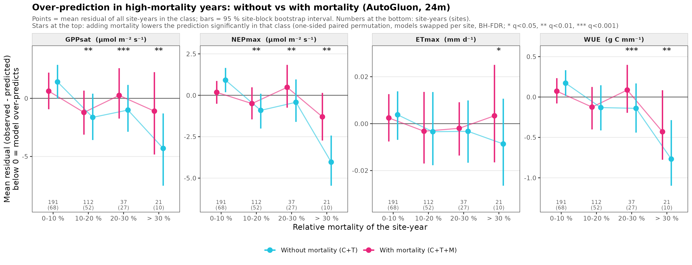
Result: without mortality the model predicts the EFPs too high in high-mortality years: in the > 30 % class (21 site-years, 10 sites) NEPmax by about 4 µmol m−2 s−1, GPPsat by 3.4–4.4 and WUE by 0.75–0.9 g C mm−1 (all learners, intervals below 0). Adding mortality reduces this bias: AutoGluon by about two-thirds (NEPmax −4.0 → −1.3), XGBoost and LightGBM by about a third to a half (−3.6 to −4.0 → −1.8 to −2.4, still below 0). ETmax shows no pattern.
Is the correction significant? Per site-year, correction = residual with − residual without mortality (= how much adding mortality lowers the prediction); one-sided paired permutation with the two models swapped per site. In the > 30 % class the correction is significant for GPPsat, NEPmax and WUE with every learner and window (AutoGluon 24 months: +3.2, +2.7 and +0.34; XGBoost / LightGBM about half of that; all q < 0.05). In the 0–10 % class mortality slightly raises the predictions. The correction grows with relative mortality (mixed model, site-block bootstrap; AutoGluon +0.96, +0.75 and +0.10 per +10 %, all q < 0.001).
The same with a mixed model (residual ~ relative mortality of the year, random intercept per site): the slope without mortality is about −0.7 to −0.8 µmol m−2 s−1 (NEPmax) and −0.18 g C mm−1 (WUE) per +10 % relative mortality; it holds with a site-block bootstrap, when leaving out any single site and without the three most extreme sites (FI-Hyy, US-GLE, US-NC2, > 50 %). With mortality the linear trend is no longer significant for any learner. GPPsat goes the same way but depends more on single sites. Whether the error reduction itself grows with mortality (test 1a) is the same direction but not robust in the bootstrap.
| model | without mortality (C+T) | with mortality (C+T+M) |
|---|---|---|
| AutoGluon · 12 months · GPPsat | -0.593* [-1.251, -0.111] | +0.398 [-0.319, +1.014] |
| AutoGluon · 12 months · NEPmax | -0.772* [-1.051, -0.513] | +0.047 [-0.239, +0.367] |
| AutoGluon · 12 months · ETmax | +0.004 [-0.007, +0.014] | +0.006 [-0.005, +0.018] |
| AutoGluon · 12 months · WUE | -0.182* [-0.267, -0.057] | -0.089 [-0.172, +0.055] |
| AutoGluon · 24 months · GPPsat | -0.595* [-1.235, -0.110] | +0.315 [-0.544, +1.018] |
| AutoGluon · 24 months · NEPmax | -0.765* [-1.062, -0.496] | -0.026 [-0.341, +0.286] |
| AutoGluon · 24 months · ETmax | +0.003 [-0.007, +0.013] | +0.006 [-0.005, +0.017] |
| AutoGluon · 24 months · WUE | -0.181* [-0.262, -0.065] | -0.082 [-0.176, +0.050] |
| XGBoost · 12 months · GPPsat | -0.509 [-1.262, +0.076] | +0.026 [-0.620, +0.571] |
| XGBoost · 12 months · NEPmax | -0.669* [-0.926, -0.416] | -0.085 [-0.347, +0.322] |
| XGBoost · 12 months · ETmax | +0.003 [-0.008, +0.014] | +0.004 [-0.007, +0.014] |
| XGBoost · 12 months · WUE | -0.191* [-0.276, -0.064] | -0.116 [-0.201, +0.024] |
| XGBoost · 24 months · GPPsat | -0.581* [-1.184, -0.148] | -0.085 [-0.570, +0.401] |
| XGBoost · 24 months · NEPmax | -0.727* [-1.026, -0.494] | -0.348 [-0.575, -0.018] |
| XGBoost · 24 months · ETmax | +0.003 [-0.007, +0.013] | +0.004 [-0.006, +0.013] |
| XGBoost · 24 months · WUE | -0.181* [-0.264, -0.071] | -0.110 [-0.193, +0.019] |
| LightGBM · 12 months · GPPsat | -0.487 [-1.202, +0.050] | -0.082 [-0.716, +0.450] |
| LightGBM · 12 months · NEPmax | -0.713* [-0.950, -0.433] | -0.054 [-0.313, +0.386] |
| LightGBM · 12 months · ETmax | +0.003 [-0.008, +0.014] | +0.004 [-0.007, +0.014] |
| LightGBM · 12 months · WUE | -0.177* [-0.260, -0.052] | -0.109 [-0.195, +0.034] |
| LightGBM · 24 months · GPPsat | -0.575* [-1.275, -0.043] | -0.211 [-0.804, +0.273] |
| LightGBM · 24 months · NEPmax | -0.696* [-0.977, -0.445] | -0.267 [-0.500, +0.123] |
| LightGBM · 24 months · ETmax | +0.003 [-0.008, +0.014] | +0.004 [-0.007, +0.013] |
| LightGBM · 24 months · WUE | -0.180* [-0.262, -0.070] | -0.117 [-0.198, +0.005] |
12 months, XGBoost and LightGBM
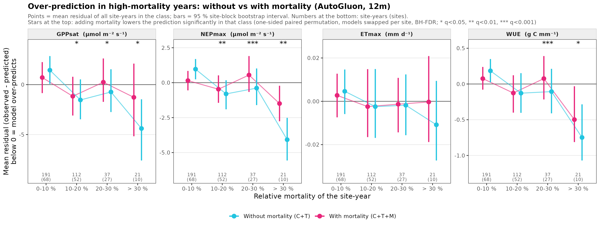
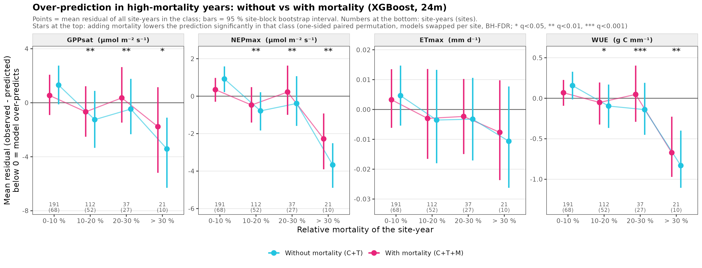
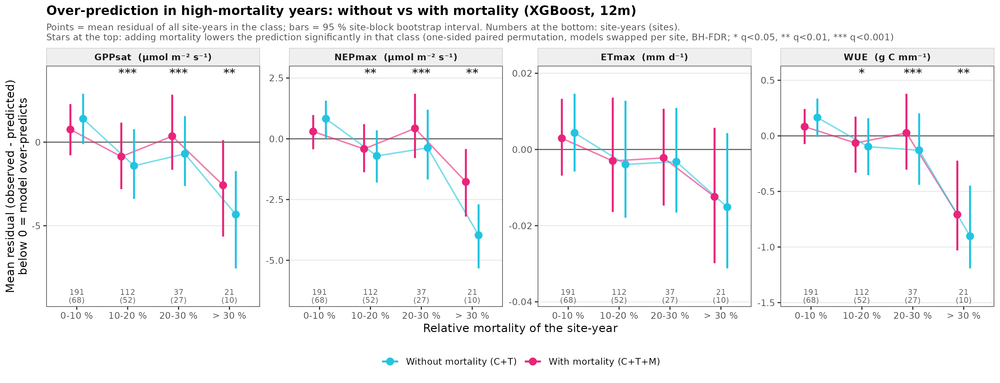
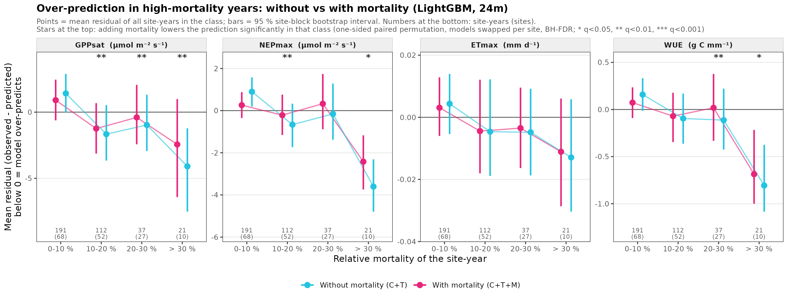
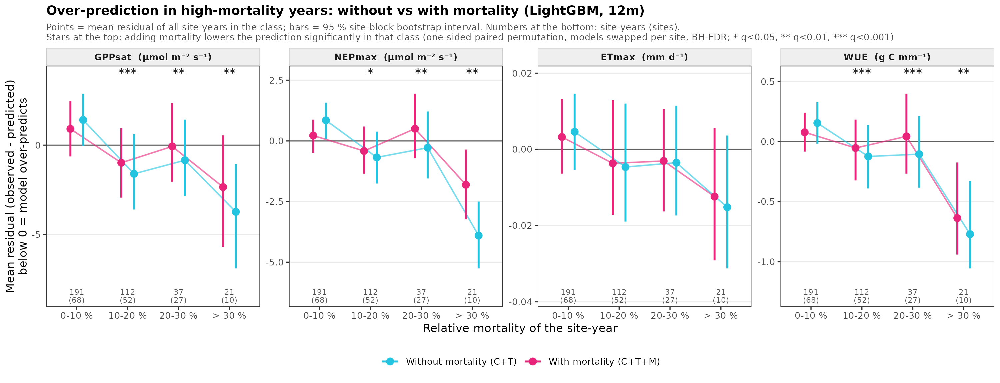
Supplement: mixed-model plots and robustness checks
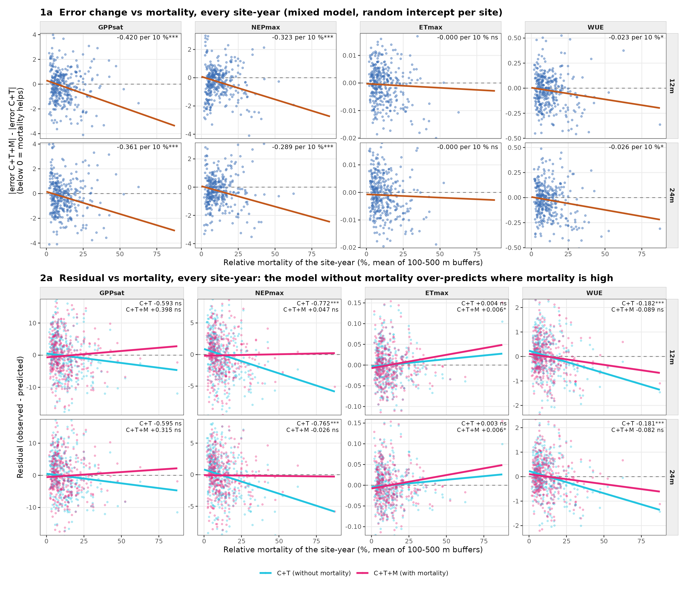
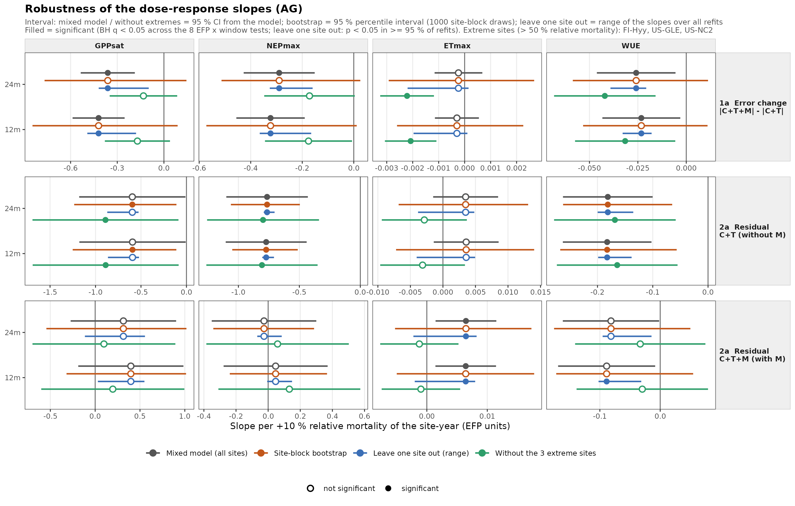
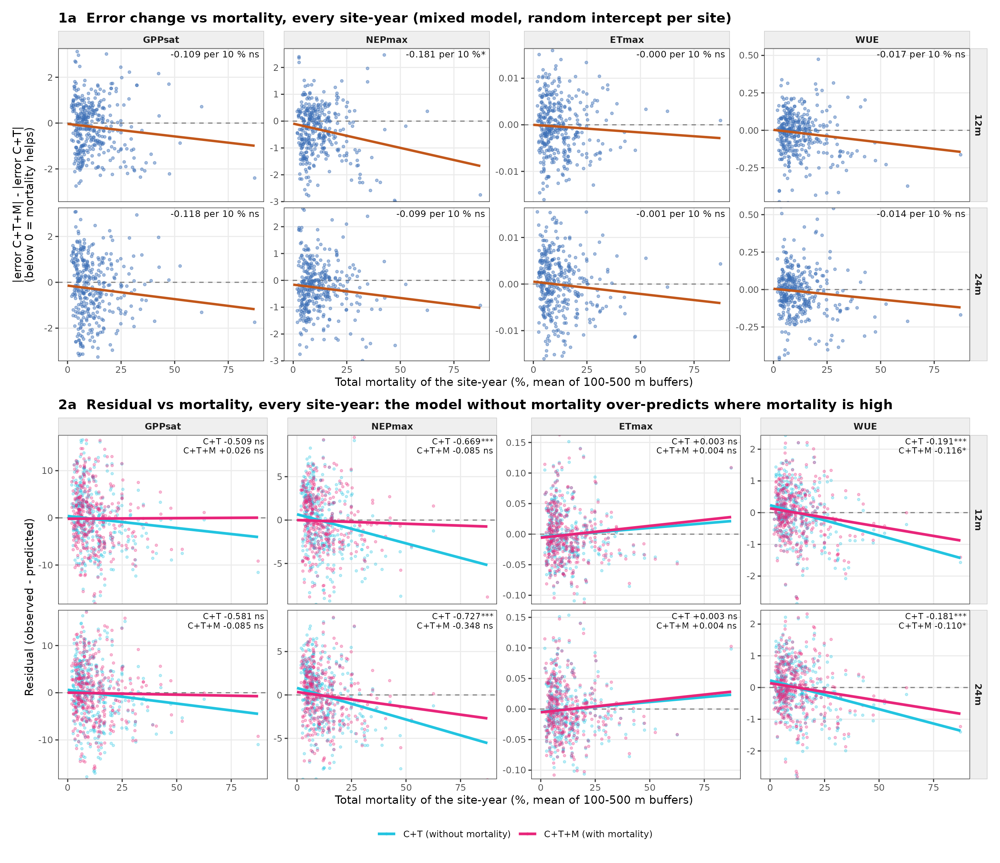
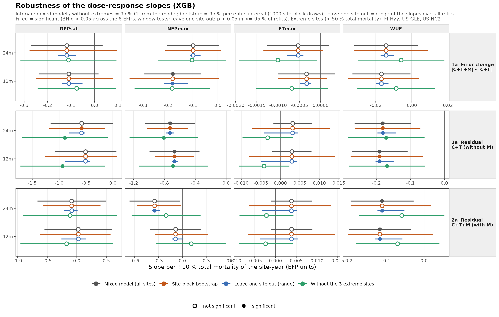
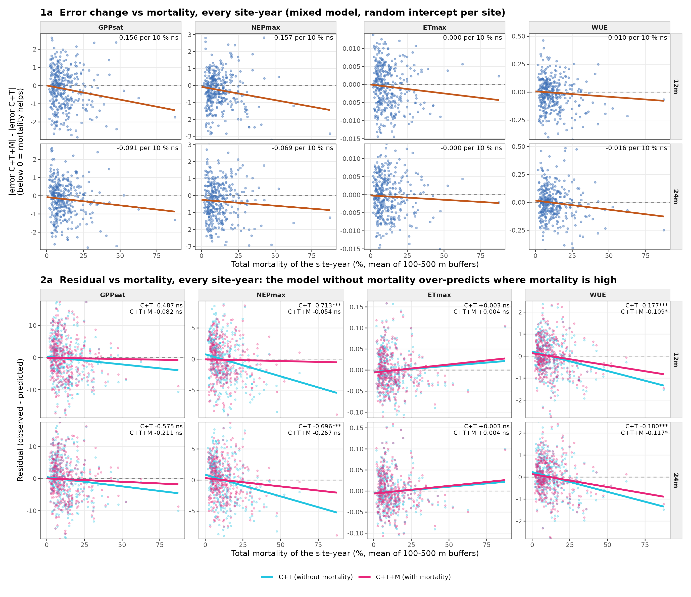
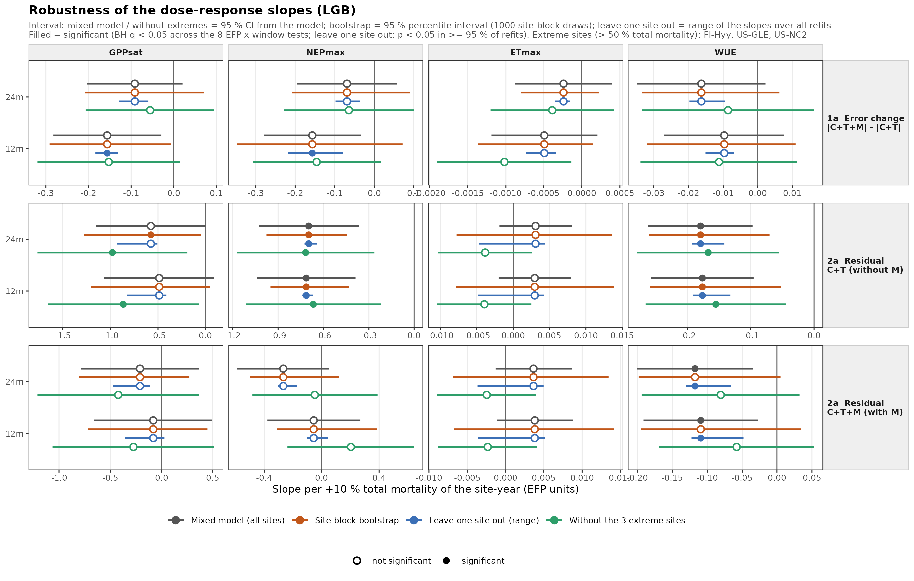
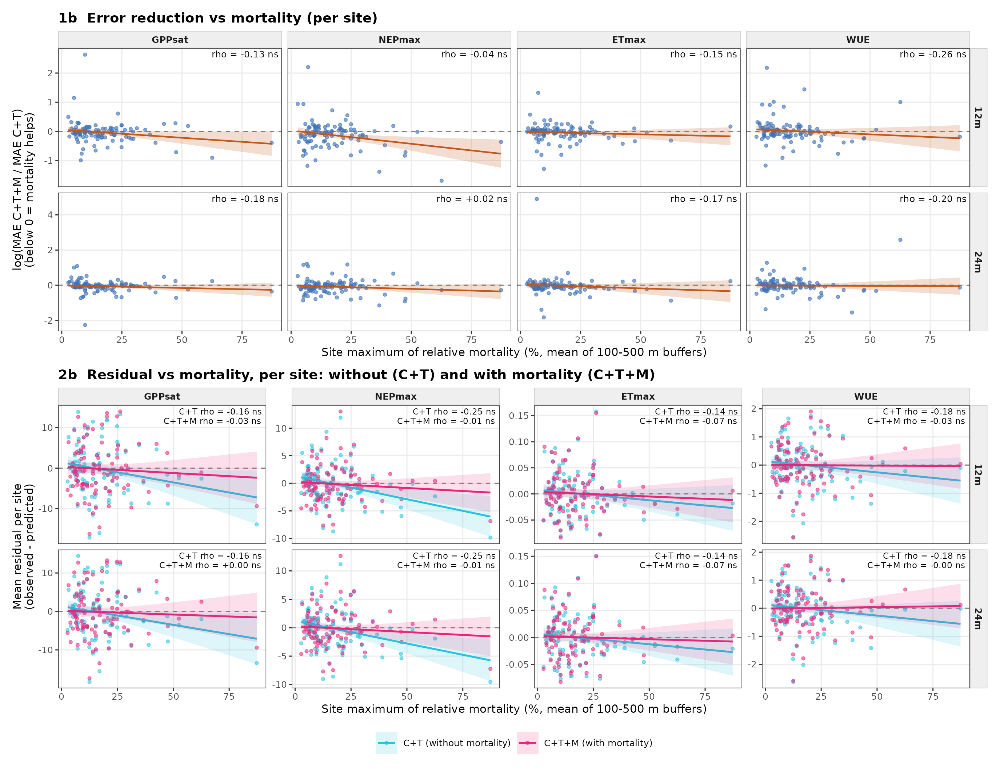
9. Circularity check: EFP-specific climate block (V5)
Question (Miguel): a climate variable that is part of an EFP's formula could make the prediction partly circular. The climate predictors are already strictly pre-season; to be safe, each EFP was refitted with AutoGluon (same data and design) without the climate variables in its formula: GPPsat without radiation (light-response curve on PPFD = SWIN × 2.11), ETmax and WUE without air temperature (ET = LE / λ(Ta)); NEPmax has no climate variable in its formula and is unchanged. Filters (SWIN thresholds, rain) are not part of the formulas and were kept.
Result: skill hardly changes (R² of C+T+M: GPPsat 0.385 / 0.365 vs 0.367 / 0.370, ETmax 0.409 / 0.420 vs 0.425 / 0.433, WUE 0.281 / 0.302 vs 0.312 / 0.326 for 12 / 24 months) and the mortality results stay: WUE still improves significantly at High sites and in high-mortality years; the over-prediction without mortality and its correction remain significant for GPPsat (+3.6 to +3.7) and WUE (+0.25 to +0.27) in the > 30 % class. GPPsat is significant at 12 but not at 24 months in the MAE table. The mortality results do not depend on climate variables that enter the EFP formulas.
| All site-years | High sites | Mid + High years | High years | |
|---|---|---|---|---|
| 12 months · GPPsat · all climate | -4.1* [-8.0, -0.2] | -7.2 [-18.1, +2.9] | -6.7* [-12.8, -0.7] | -12.0 [-29.5, +4.9] |
| 12 months · GPPsat · EFP-specific climate | -6.1* [-10.5, -1.7] | -12.1 [-24.4, +0.5] | -8.3* [-15.6, -1.1] | -16.1 [-35.0, +5.0] |
| 12 months · NEPmax · all climate | -11.8** [-17.0, -6.3] | -22.6** [-33.6, -11.1] | -12.5** [-20.1, -4.9] | -31.6* [-43.2, -16.0] |
| 12 months · NEPmax · EFP-specific climate | -11.8** [-17.0, -6.3] | -22.6** [-33.6, -11.1] | -12.5** [-20.1, -4.9] | -31.6* [-43.2, -16.0] |
| 12 months · ETmax · all climate | -1.3 [-4.2, +1.3] | -2.9 [-8.4, +2.1] | -3.9* [-7.7, +0.0] | -9.7 [-20.6, +2.7] |
| 12 months · ETmax · EFP-specific climate | -1.5 [-4.4, +1.4] | +0.4 [-5.5, +8.0] | -2.2 [-5.9, +2.4] | -2.0 [-17.0, +14.8] |
| 12 months · WUE · all climate | -4.3* [-8.1, -0.2] | -10.9** [-17.8, -4.3] | -7.2* [-12.2, -1.8] | -16.9* [-25.2, -5.1] |
| 12 months · WUE · EFP-specific climate | -4.3* [-7.9, -0.1] | -11.2* [-18.6, -4.4] | -6.3* [-12.0, -0.2] | -16.8* [-26.6, -5.5] |
| 24 months · GPPsat · all climate | -5.7* [-9.5, -1.7] | -7.1 [-17.2, +3.6] | -8.3* [-14.2, -2.6] | -11.1 [-28.0, +8.1] |
| 24 months · GPPsat · EFP-specific climate | -4.1 [-8.4, +0.2] | -4.5 [-19.0, +11.6] | -4.7 [-12.6, +3.2] | -9.9 [-33.3, +19.7] |
| 24 months · NEPmax · all climate | -10.8** [-16.0, -5.1] | -17.5* [-30.7, -2.1] | -11.6* [-19.8, -2.7] | -29.2* [-42.9, -8.6] |
| 24 months · NEPmax · EFP-specific climate | -10.8** [-16.0, -5.1] | -17.5* [-30.7, -2.1] | -11.6* [-19.8, -2.7] | -29.2* [-42.9, -8.6] |
| 24 months · ETmax · all climate | -2.0 [-5.0, +0.9] | -5.3 [-13.1, +1.2] | -5.4* [-9.6, -1.3] | -11.4 [-23.7, +3.2] |
| 24 months · ETmax · EFP-specific climate | -1.1 [-4.1, +1.7] | -1.1 [-8.3, +6.1] | -3.5 [-8.0, +1.1] | -6.3 [-20.7, +9.3] |
| 24 months · WUE · all climate | -4.7* [-9.1, -0.1] | -14.8* [-23.9, -6.4] | -8.2* [-14.5, -1.5] | -21.8* [-34.5, -8.2] |
| 24 months · WUE · EFP-specific climate | -4.2 [-8.5, +0.5] | -14.5** [-22.5, -6.6] | -7.9* [-14.0, -1.2] | -20.4* [-29.2, -9.5] |
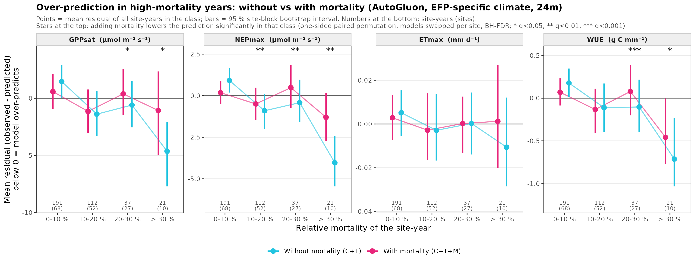
12 months
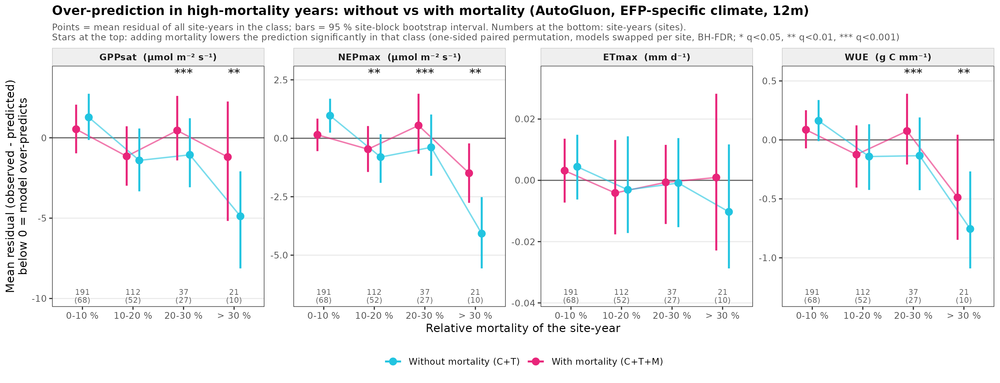
10. Mortality block, metric by metric (V5)
Share of the mortality-block |SHAP| per metric (C+T+M, V5 without thresholds, mean over the 101 sites, bars ± SE). Grey = relative mortality, red = deadwood metrics, green = tree-cover loss. The metrics are strongly correlated (relative mortality vs relative deadwood ρ = 0.91), so SHAP shares show which variables the model uses, not what each metric adds on its own. AutoGluon SHAP is permutation-based: compare shares, not magnitudes.
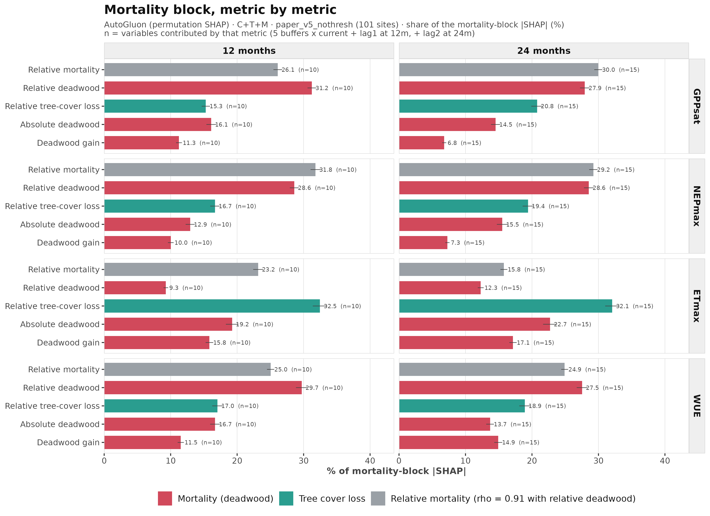
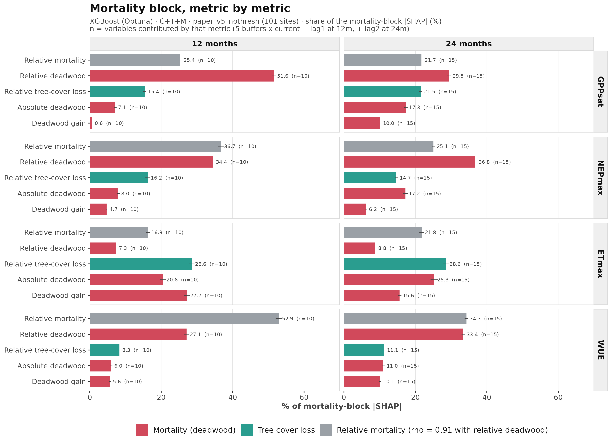
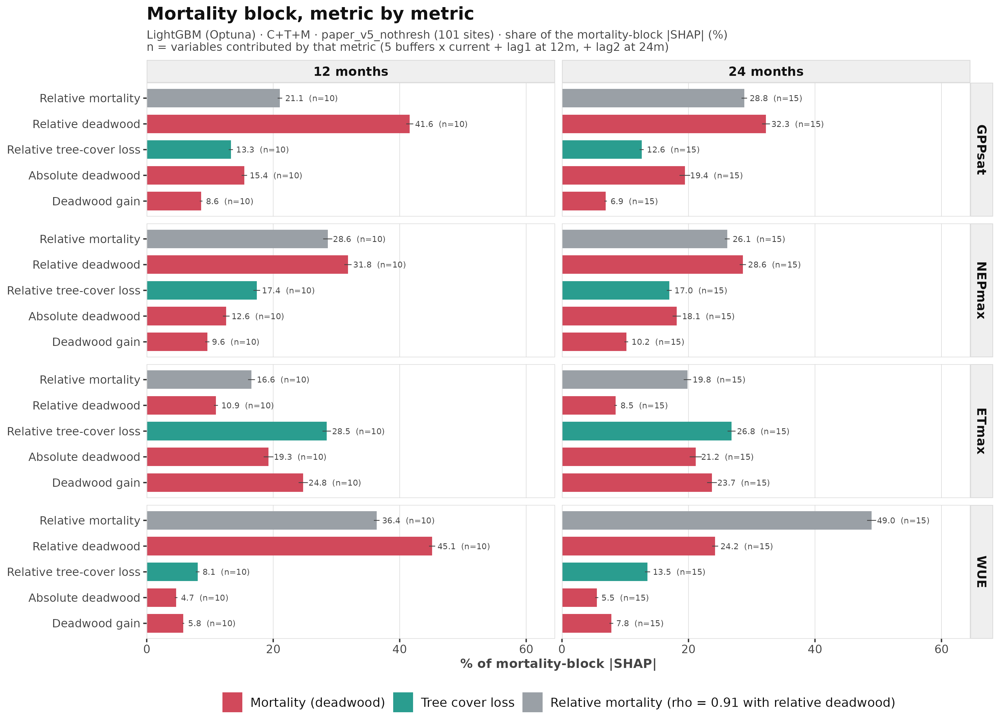
11. V4.1 vs V5
V5 (the paper dataset) was built from the newest maps with the same rules as V4.1. It keeps 101 of the 104 V4.1 sites (loses CA-DB2, CA-LU1, FI-Var, US-BZB through the tree-cover filter, gains AU-How).
| mean_v41 | mean_v5 | median_change | r_site_years | r_spearman | |
|---|---|---|---|---|---|
| metric | |||||
| relative mortality | 13.285 | 12.284 | -1.298 | 0.883 | 0.870 |
| relative deadwood | 10.873 | 9.336 | -1.497 | 0.880 | 0.877 |
| tree cover (500 m) | 69.027 | 67.605 | -0.731 | 0.979 | 0.979 |
| high_v41 | high_v5 | both | only_v41 | only_v5 | |
|---|---|---|---|---|---|
| metric | |||||
| relative mortality | 21 | 22 | 16 | CA-DB2, CA-LU1, US-BZB, US-BZo, US-Rpf | AU-How, FI-Ken, FR-Bil, SE-Htm, US-CMW, US-xBN |
| relative deadwood | 23 | 22 | 18 | CA-DB2, CA-LU1, CZ-BK1, CZ-RAJ, IT-Lav | AU-How, FI-Ken, US-CMW, US-MtB |
| LightGBM V4.1 | LightGBM V5 | XGBoost V4.1 | XGBoost V5 | |
|---|---|---|---|---|
| own sites | 0.404 | 0.373 | 0.402 | 0.373 |
| shared site-years | 0.361 | 0.368 | 0.353 | 0.369 |
| XGBoost V4.1 | XGBoost V5 | LightGBM V4.1 | LightGBM V5 | |
|---|---|---|---|---|
| GPPsat · 12 months | -7.50 | -2.78 | -7.28 | -2.97 |
| GPPsat · 24 months | -6.54 | -3.72 | -6.98 | -2.88 |
| NEPmax · 12 months | -10.60 | -8.18 | -10.64 | -8.12 |
| NEPmax · 24 months | -8.71 | -6.94 | -10.20 | -9.65 |
| ETmax · 12 months | -1.97 | -0.40 | -1.65 | -0.72 |
| ETmax · 24 months | -2.45 | -0.10 | -1.07 | -0.95 |
| WUE · 12 months | -6.41 | -3.45 | -5.97 | -1.30 |
| WUE · 24 months | -6.09 | -2.55 | -5.77 | -1.56 |
- Robust: the NEPmax effect (−9 to −11 % overall in V4.1, −7 to −10 % in V5; −11 to −22 % at high-mortality sites, significant in both) and the direction of the effect (Fig 4).
- Map-dependent: the GPPsat effect is weaker with V5 (about −3 % instead of −7 % overall) and at high-mortality sites no longer significant; WUE is also weaker overall.